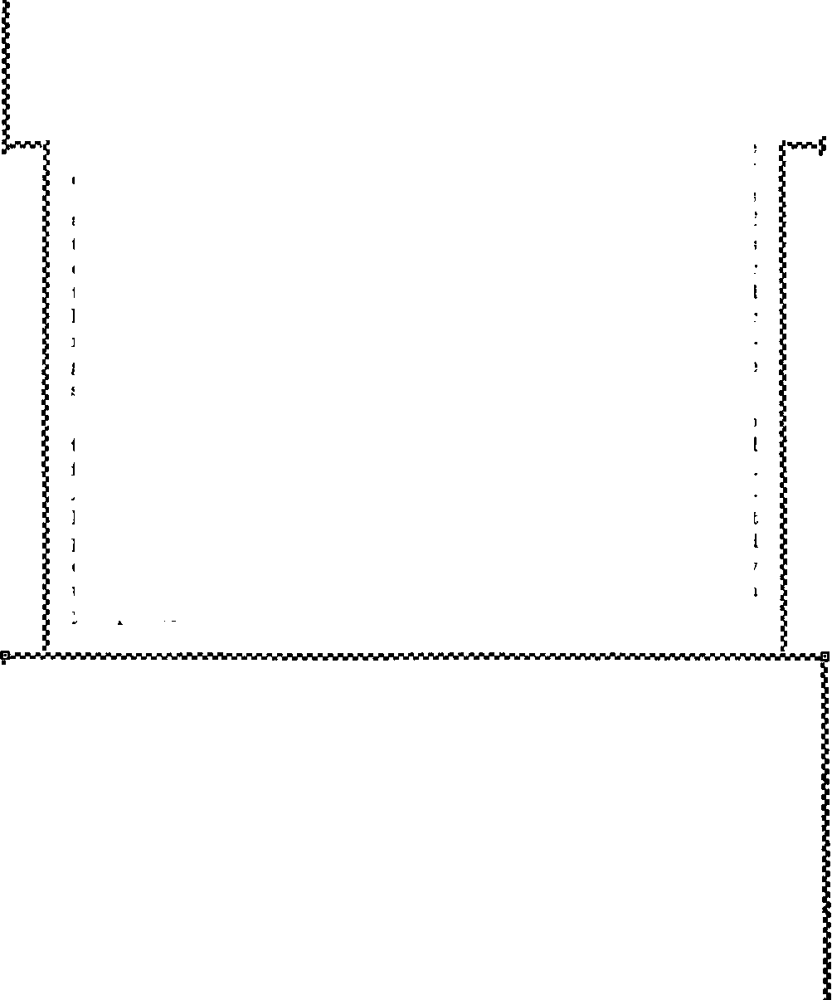

iiiiiiiiiiiiiiiiiiiiiiiiiiiiiiiiiiiiiiiiiiiiiiiiiiiiiiiiiiiiiiiiiiiniiiiiiiiiii
iTi this issue
(G)
iiiiiiiiiiiiiiiiiiiiiiiiiiiiiiiiiiiiiiiiiiiiiiiiiiiiiiiiiniiiiiiiiiiiiiiiiiiiii
every other WEDNESDAY
five cents a copy one dollar a year Canada & Foreign 1.25
Vol. XVIII-No. 463
June 16, 1937
|
Jehovah’s witnesses—Process Servers of the Great Judge 579 Exploits of a Catholic Boys’ Brigade 579 Accuses Nutley of Idiotic, Vacant Stare 580 IIolahan Caught in the Flypaper 581 The Most Perfect Hypocrisy 583 Concerning Heretical Booklets 584 Quite a Good Idea for Police to Be Law-abiding 585 Opportunities for Serving the Truth 585 Copy of a Note to Frank Hague 586 A Kentucky Preacher’s Wife 586 Weehawken Township Committee Hangs by Tail 586 These Funny Newspapers 587 One of Jehovah’s witnesses in Italy 587 Jehovah’s witnesses in Rumania 588 “Jehovah’s witnesses” and “Heil Hitler” 589 Jehovah’s People at Quarryville, N.B. 590 What a Deliverance! 590 Four Witnesses in Lafayette, La. 591 •• ftX©» - ■■--------------------------- |
■ ■ ■ Cartoons (By the Cartoonist himself) 592 Garmon on the Warpath 592 Exposed (G) 593 Unabashed Conspiracy and Hypocrisy 594 Salter’s Most Malicious, Cowardly Falsehood 595 ‘ ‘ Out of Thine Own Mouth Will I Judge Thee, Thou Wicked Servant” 596 A Young Woman Pioneer in Utah 597 ‘ ‘ Uncovered ’ ’ and ‘ ‘ Protection ’ ’ in Southern Rhodesia 598 Mob Violence Comes Home to Roost 600 ‘Purifying’ Madison Square Garden 600 The Ebullition of Iris Brown 601 “Hell” and Its Associations 602 Disobedience Turns Certain Vic tory into Utter Defeat 604 The 7,000 Saw the Point 604 Ahab Gets Bad News from Damascus 605 “The Gods of the Hills” 605 The Thing Plainly Discernible 606 The Parson Raised Cain 606 Sound-Car Work in Hammond, La, 607 |
Published every other Wednesday by GOLDEN AGE PUBLISHING COMPANY, INC. 117 Adams Street, Brooklyn, N, Y., U. S. A. Clayton J. Woodworth President Nathan H. Knorr Vice President
Charles E. Wagner Secretary and Treasurer
FIVE CENTS A COPY $1 a year, United States; $1.25 to Canada and all other countries.
Notice to Svbschibebs
Remittances : For your own safety, remit by postal or express money order. When coin or currency is lost in the ordinary mails, there is no redress. Remittances from countries other than those named below may be made to the Brooklyn office, but only by international postal money order.
Receipt of a new or renewal subscription will be acknowledged only when requested. Notice or expibation is sent with the journal one month before subscription expires. Please renew promptly to avoid loss of copies.
Send change or addbess direct to us rather than to the post office. Your request should reach us at least two weeks before the date of issue with which it is to take effect. Send your old as well as the new address. Copies will not be forwarded by the post office to your new address unless extra postage is provided by you.
Published also in Bohemian, Danish, Dutch, Finnish, French, German, Greek, Japanese, Norwegian, Polish, Spanish, Swedish.
, Offices fob Otheb Countries
British 34 Craven Terrace, London, W. 2, England
Canadian 40 Irwin Avenue, Toronto 5. Ontario, Canada
Australasian 7 Beresford Road. Strathfleld, N. S. W., Australia
South African Boston House, Cape Town, South Africa
Entered as second-class matter at Brooklyn, N. Y., under the Act of March 3, 1879.
-sxG).---
Volume XVIII Brooklyn, N.Y., Wednesday, June 16, 1937 Number 463
Jehovah’s witnesses—Ambassadors for God and His King— Process Servers of the Great Judge—Announcing that Jehovah’s Kingdom Is Here
(Part 3)
(A brief account of some experiences of true Christians in various parts of the United States, Canada, Germany, Italy, Rumania, South Africa, Syria, Palestine, Egypt and other lands in [and as a consequence of] their fearless and thrilling denunciations of the clergy of the Devil, the politicians of the Devil, and the financiers of the Devil, beginning with the great Keystone State of Pennsylvania, U.S.A.)
Exploits of a Catholic Boys’ Brigade
FOR more than a year now an electric sign has flashed in the sunporch window of the home of Fred Rowitsch, 155-35 101st St., Howard Beach, New York city. “How to obtain Riches that endure. Inquire within,” read the sign. Passers-by did “inquire within”, and received books and booklets pointing the way to “riches that endure”.
From the very first the sign annoyed certain inhabitants of Howard Beach who were loyal subjects of Monsignor T. A. Num-
Fascism (Catholic Action) at Howard Beach
posed”. Nummey worshipers took note of the change, and, after ascertaining the significance of the new sign, tossed another brick through the window, just to be sociable and to show their good Catholic training. But before this happened they had been throwing stones at the house, sneaking up to the door, ringing the bell, shouting “Down with the Communists” and peeping in at the window when a group of friends were assembled to study the book Riches.
Evidently there were two gangs at
mey; thoughtless ones tossed a brick at the window, and broke the window and sash. The sash and window were repaired in such a way as to show up the sign to better advantage, and a month later it was broken again, and again repaired. This was early in 1936. No further breaches of the peace took place for a time.
Lately the “Riches” sign has been replaced with one announcing the radio lecture “Exwork, one about 9:30 p.m., and the other between 12: 00 and 1: 00 a.m.
With the third smashing of the window (April 23, 1937) the police were called in. Detectives were assigned to the case, who asked that any clue whatever be turned over to them. A copy of the booklet Uncovered was placed with the detectives for full information.
As several of the attacks took place on Friday evenings, Mr. Rowitsch and his sister-inlaw, Mrs. Green, decided to watch as to what might happen on April 30. Jehovah led the culprits right into their hands. A group of eight or ten boys in the uniform of the Catholic Boys’ Brigade, who had been drilling with wooden rifles at the Lady of Grace Auditorium, were returning from their weekly drill. In khaki uniform, oversea hat, brown leather belt, and epaulets on their shoulders, the boys were properly fitted out for the work in hand.
As they neared the house where the electric sign flashed, stage whispers ensued.
“Here it is,” said one boy.
“Wait till we are all in a bunch,” suggested another.
Then came the stones, which hit the porch, and the brave boys ran, pursued by Rowitsch. Two of them, William Steuber and Fatty Minnock, thinking they were not noticed, stood where they were, and were caught by Mrs. Green. The police were called, and after calling three times and waiting for 45 minutes, finally made an appearance. A report was filled out stating names, ages of the boys, 12 and 13, and the complaint No charges were pressed, but the names were to be turned over to the Crime Prevention Bureau, which follows such cases up closely.
The policemen questioned the boys.
“Why do you throw stones at this house ?” “Who tells you to do that?”
“Do they talk about it at home?”
“Does someone down below [meaning at the church] send you to do it?”
“Why don’t you break windows on the house next door, or the church, or the monsignor’s house?”
The boys denied throwing stones, didn’t know why they did it, nobody sent them, and, anyway, they didn’t know anything.
Mrs. Rowitsch asked them if they knew what a Communist is? Fatty said “Yes.”
“You know a Communist does not believe in God?”
“Yes,” from Fatty.
“How can we be Communists when we believe in God and in Christ Jesus?”
Fatty looked surprised but made no comment.
The policemen stated that Rowitsches had a perfect right to believe what they wished, witness from house to house, and display signs, and nobody had a right to interfere. (Rowitsches knew all that already, but it was nice to know the policemen knew it, too.)
Then, with a promise to follow up the case, the policemen sent the boys home, and departed. Detectives came later and took all the data, and promised to see the monsignor about it, who is, they said, a broadminded man and would not sanction such actions.
Saturday Mrs. Steuber called on Mr. Rowitsch, saying that the police had called at her house to inform her of the incident. She declared that William was innocent and is determined to prove it. She will visit the monsignor, and also Mr. Molloy, major of the “Brigade”, who happens to live directly opposite the Rowitsches. Said she would find out who throws the stones, and if that is what they are taught at the Lady of Grace Auditorium she will take her boy out of the Brigade.
A large canvas sign, reading “Hypocrisy Exposed”, and telling of the series of lectures on that subject to be heard over the radio, now decorates the front gable of the house. The electric sign, for the present, flashes from behind a broken window, just to show the public the kind of work that is being exposed.
The ways of Jehovah are wonderful. Satan’s agents are co-operating beautifully in accomplishing their own exposure. Their tactics, wherever they raise their heads, quickly identify them for what they are, and all Jehovah’s witnesses have to do is to hold aloft the light of Truth.
"NUTLEY, N.J., believes in sending women Al to prison for thirty days rather than permit them to preach the good news of God’s kingdom to her bechurched and benighted citizens. Accordingly it is with a smile that one reads in the Paterson Evening News that somebody from Akron, Ohio, wrote to Mayor Frederick H. Young that he thought the people of Young’s city have an idiotic, vacant stare and that it is a hick town inhabited by pretentious and silly people who have a lot to learn and who should do more traveling.
DID you ever see a eat get caught in the flypaper? It is one of the funniest sights in the world. The more it jumps and leaps and struggles, the more flypaper it gathers up, until finally it sneaks off to some place where it can rub off some of the paper, lick off the rest, and saunter hack into the family circle with all the heavy dignity of an impostor wearing a three-story crown upon his manly brow.
Holahan is like that. See his effusion of
April 26 reproduced herewith; also the communication covertly threatening boycott of advertisers of radio station WEST, of Easton, Pennsylvania, unless said station should break its contract to broadcast “the Judge Rutherford program or any program of its kind” presuming to tell the truth about the erroneous theories of Roman Catholicism.
Holahan couldn’t let it go at that. He was already well wrapped in several sheets of the sticky sweetness, but he wanted more, and got it. He thirsted for publicity, and so busted loose in the Easton
Holahan entertaining Easton, Pa.
Plain Dealer explaining that while it was perfectly all right for a Holahan to criticize Judge Rutherford, yet it would be absolutely wrong for Judge Rutherford to criticize in any way the wickedest bunch of dollar-chasers that ever lived on the planet.
“Judge Rutherford should mind his own business and keep away from other religions. We believe in the Golden Rule of charity.”
That is Holahan’s expression. He would enforce the Golden Rule so that nobody would dare tell the truth about the Roman Hierarchy.
“The people live in a Christian community, and such things shouldn’t be allowed to happen,” says Holahan. Quite so! Quite so! It is all right to boil people in oil, or jerk their arms out of their sockets, or pour molten lead into their ears, or teach doctrines that would shame anybody but the Devil, but nobody must say anything about it. If they do, the Golden Rule is busted all to splinters, and it may be necessary, to boycott half the merchants in the city, and eventually to torture anybody and everybody that dares speak up above a whisper. That’s the idea.
Holahan was getting along fine, and then Jehovah’s witnesses in Easton swung into action.
First they circulated widely a nice little card, copy of which is as follows:
DO YOU KNOW That a religious organization is dictating what can be broadcast from your local radio station? Catholic priests have decreed that all listeners, Catholics and Protestants, shall not hear the truth concerning “Purgatory” and similar subjects. Therefore, Judge Rutherford’s lectures are no longer permitted to be broadcast from Station WEST.
Would you like to hear the truths which have caused this censorship to be established in your midst? They can be presented right now in your own home. There is no obligation to buy anything, or join anything.
The more of these there were circulated, the more flypaper stuck to Holahan, and the more people in Easton became interested in the matter. This all worked out well for the spread of the truth. The folks began to wonder why the radio station’s courage had oozed, and why the Roman clergy are so mightily interested in keeping Judge Rutherford silent.
Then the Easton witnesses mailed Mr. Holahan the letter of which copy is reproduced herewith. Moreover, they sent a copy of it to the editor of the Plain Dealer, and that gentleman, being one of those rare human creatures with a spinal column and intestinal fortitude, published it entire.
That’s all! Now the whole city of Easton is laughing at Holahan, and even the Catholic priests of the community privately admit that this was one time when he stuck his foot in it.
Easton, Pa., May 6, 1937. Edward J. Holahan,
Pastor of St. Bernard’s Catholic Church, 132 South 5th St., Easton, Pennsylvania. Sir:
Your recent letter and boycott petition addressed to the management of radio station WEST, Easton, has been brought to our attention.
You state that Judge Rutherford’s talks are “against the Church”, and therefore he should not be permitted to broadcast his lectures in the community. You, and the Catholics you can influence, have set yourselves up as the radio dictators of Easton. In effect you have ruled that no one in Easton is to listen to anyone who “talks against the Roman Catholic Church”, no matter how truthful his statements may be.
We wonder if the nonCatholic people of Easton are in favor of having a Catholic priest prescribe their radio diet.
You accuse the radio station management of being “un-American” because it broadcasts Judge Rutherford ’s lectures. Then in the same breath you show the station management how un-American you and your “Catholic daughters” can be by subtle attempts to boycott the radio station. Boycotting is distinctively un-American and is a distinctively Catholic method of stifling freedom of speech. You hold the boycott club over the head of radio station WEST just as your predecessors in tyranny held the club of physical torture over the heads of their victims in the days of the Catholic inquisition.
Your letter and petition show that the American principles of freedom of speech and freedom of religion have no place in the Catholic organization. You believe in strong-arm methods. Undoubtedly you would like to use the rack and thumbscrew, but in view of the fact that you could not get by with that in America you resort to the un-Christian, un-American, indecent, dishonest, vile and barbarous threat of boycott. Your organization prates greatly about freedom of speech, but would allow no freedom to show the falsity, errors, and frauds of Catholic teachings. You would bludgeon the radio stations into silence with your threats and coercion regardless of the corruptness of the practice.
Saint Bernard Church 132 S. Fifth St, Easton, Pa.,
April 26, 1937,
Ie the signers, strenuously object to the radio speeches of one certain Judge Rutherford* These speeches are directed against our Church (Catholic), It is un-American and unfair, and your Station should not allow a nan of this type to foment religious dissension! among the peaceful citisena of Easton and vicinity* At the present time we would suggest that this gentleman occupy his time, talents and energy in a more commendable manner*
Rector,
Flypaper Sheet No. 1
It is a good thing for the American people that you and your kind do not rule America as you did Europe in the Dark Ages.
We note, however, a lack of unity of action among you gentlemen of the cloth of the Catholic system. One priest, designating himself as the Reverend Richard Felix, 0. S. B., of Pilot Grove, Missouri, who, like you, thinks he has a special mission to “camp on the trail of Judge Rutherford”, deplores the boycott system. He says it indicates that the Catholics have something to hide. Evidently that is true. This confusion in the matter of tactics indicates that the god of your church (for his identity see John 8:44) should keep his priests in better order. One is yelping, “Boycott the stations that broadcast Judge Rutherford’s lectures.” Another says, “Don’t try to shut him off the air; that looks bad for us. ’ ’ And thus the devotees of “Catholic Action” pull against each other and know not whither they are drifting. Your god doesn’t have good control over his shepherds. You and Felix ought to get in touch with him and straighten out the muddle.
On one point, however, you are in perfect agreement: You know that the Catholic dogmas cannot stand the light of truth. You both know that the purgatory graft, the remission-of-sins racket, the blasphemy of papal supremacy, and other forms of Catholic hoeus-poeus would look worse than smallpox lined up against the truth as set forth in the Word of Almighty God. Therefore, when two million six hundred thirty thousand people signed a petition calling for a debate between Judge Rutherford and any Catholic prelate, the Roman Catholic Hierarchy was placed in an embarrassing position. But you and Felix and all your tribe agreed that no matter how embarassing it is to decline
Ftna«yjvwla Ajrtl 84. IMV
c*tholl« DnuehUr* of Aatrlaa. 4tMn4 that th* 7uQ« fetMrford preen* «r any pvsfraa af its kind W prehlUtad froo breadeeattnf its arronaoua lk«orl«a «<elaat CathaUalm aver Station VIST.
A copy of this demand is being sent to the advertisers of Station WEST.
w «• riiatn yntMt at Dm bbawdahaMne a*yud<e Buthfard ear laaal atattw
3» >C^
Flypaper Sheet No. 2
Sheet No. 3. Look at the specks!
the challenge, it is not safe to meet Judge Rutherford in public debate. You agree that it is best to forbear to fight. None of you have answered the call to battle. You have crawled into your holes and resorted to the distinctively Catholic tactics of bulldozing and threatening radio stations with boycotts and loss of business. You thus think you can stop the spread of truth and keep yourselves free from exposure.
Nineteen centuries ago the Master, whom you piously pretend to serve but actually oppose, told a bunch of similar clerical frauds what He thought of them, and wound up with this benediction: “Ye serpents, ye generation of vipers, how can ye escape the damnation of hell?” (Matthew 23:33) That discourse of Jesus to the clergy of His day is recommended to you and Richard Felix for careful consideration.
Sincerely,
Easton Company of Jehovah’s witnesses, by Hiram P. Kleinhans, Company servant, 505 Philadelphia Road, Easton, Pa.
FOB a sample of the most beautiful and perfect hypocrisy ever written by the pen of man; see the following editorial taken from The Register, Denver, Colo., one of the little sheets of the cowardly organization, the Roman Catholic Hierarchy, that not only has refused to meet Judge Rutherford in open debate, but knows full well that the doctrines taught by the Hierarchy are so unreasonable, dishonest, inconsistent and foolish that they cannot be defended:
where freedom ceases
The fact that the mentally shriveled “Judge” Rutherford, the self-appointed messenger of ‘' Jehovah-God”, is being allowed to continue his “canned” ranting against reputable institutions, the Catholic Church in particular, makes us wonder whether those guilty of allowing him the courtesy of the radio know what freedom of speech means.
Freedom of speech is a balance or compromise between two rights: The right we have to use our power of speech; the right everyone else has to keep his or her good name. Freedom of speech, then, certainly does not mean liberty to slander or to throw verbal mud at another. Put practically, it does mean, and can mean only the liberty to debate reasonable questions open to reasonable interpretation.
Open Letter to Monsieur the Bishop of Saint-Die
(Translation from French Golden Age [November issue] by F. B. Freer, of Leicester, England)
THE Religious Weekly of Saint-Die, dated June 12,1936, publishes the statement given below, which statement is repeated in The Cross of Sunday, June 14,1936, under the title “Heretical Booklets”.
A distribution has recommenced in our towns and countryside of booklets with illustrated covers, written by Judge Rutherford and published by the Watch Tower Bible & Tract Society.
We remind the faithful that it is forbidden them to read or even to possess these heretical booklets, under pain of excommunication by the Sovereign Pontiff (Canon 2318, Paragraph I). They must be destroyed immediately they are received.
Louis, Bishop of Saint-Die.
As, Monsieur Bishop, you set at naught with such assurance the publications distributed by the Watch Tower, it is evident that you have read at least one of these works.
You are therefore too well informed not to have estimated at its true worth that message which, in harmony with the Divine will expressed in Matthew 24:14, is today preached throughout the entire world, and which message is summed up as follows:
[Here follows a synopsis of the Good News of the Kingdom, which is well known to the favored English-speaking readers of The Golden Age.
Is it possible, Monsieur Bishop, to publish a message more comforting and more sublime? Would you, who know the Bible by heart, dare to swear with one hand on your breviary and the other on a crucifix that each and every promise contained in the foregoing resume is not confirmed by the Holy Scriptures? And dare you repeat that these wonderful prophecies are heresies? Are you so much in love with this evil world, infested as it is with thieves, tyrants, oppressors, and every sort of evildoers, that you cannot bear to hear the reign of righteousness spoken of?
Do you dread the kingdom of God so much that you must pursue with such manifest hatred those who announce its near establishment on earth? Does the lot of the poor leave you indifferent to the degree that you treat as undesirables those who courageously go from door to door telling the oppressed that God is at last going to deliver them from all their enemies ?
There ought to be no more ardent protectors of the courageous Watch Tower pioneers than those who call themselves ministers of God. If the latter were truly ambassadors of the Most High, could they have more valuable helpers than Jehovah’s witnesses? Your elementary duty is to show them love and to commend them to your parishioners. You ought, Monsieur Bishop, to invite them to your diocese in order that they might abundantly spread the good news among the flocks committed to your spiritual guidance.
Why do you, on the contrary, knowingly lie in asserting that these humble disciples of Christ are propagating subversive doctrines? What master do you serve when you treat as dangerous malefactors the most peaceable men on earth?
Cite us the passages from the Scriptures corroborating the baptism of newborn babes; purgatory; hell-fire; three gods in one; the worship of angels, of saints, of the virgin, of relics and of images; the Catholic Hierarchy; indulgences; the chaplet; the rosary; vain repetitions; prayers for the dead; processions and holy water. Show us also the Scripture text authorizing the imperial inquisition, and the page where are set forth the tortures inflicted in former times by the demons of the “Holy Office”.
But why continue, since you know as well as ourselves that these doctrines are of human invention? The heretics are not those whom you denounce; and to you belong the punishments of the divine sentence pronounced against false teachers in the 23d chapter of Jeremiah’s prophecy. The prophet there speaks of those who twist the Word of the living God, tell the visions of their own hearts, prophesy lies, and represent these words as being a message from the Most High.
Those who lead the people astray with their empty dreams serve no good purpose. Their punishment will not be excommunication by a man, which is a matter of no importance; but their fate will be far more serious. It is written that they shall be cast out of the presence of the Lord, and covered with everlasting reproach, and perpetual shame, which shall never be forgotten.—Jeremiah 23:39,40.
IT IS quite a good idea for police to be law-abiding, but that never seems to have occurred to some of them. They seem quite unconscious of the fact that they must themselves keep the peace, and that in their discharge of their official duties all citizens are to be treated alike. A bishop is to be treated as well as a law-abiding colored bootblack, provided he is equally law-abiding. But if the bishop holds the law of the country in contempt, then he should be made to walk the chalk line of good behavior. Some bishops seem to think the police are merely their office boys, set to run their errands. They err.
There was an interesting time at Mobile, Ala., May 9,1937, in which the police of that city received some instruction in righteousness. The facts were set forth on a dodger, reproduced herewith. Twenty-three cars of Jehovah’s witnesses (107 workers) had the pleasure of calling at every Mobile home, and leaving 2,368 Uncovered booklets besides the instructive dodger.
The medicine took, and the patient was helped greatly. To be sure, the police rushed out and picked up nine of the 107 workers, but that is a small percentage of casualties. The chief of police had not expected the exposure, and was quite manifestly disturbed at the publicity. He should have thought of that on April 17. He admitted he had done wrong in permitting his men to tear signs off a pioneer’s car, said signs only telling of the lectures at the home of the local meeting place.
Further publicity was obtained in Monday’s newspapers, because the nine arrested were detained in the city, on their own recognizance, for hearing on Monday. At the hearings all the cases were dismissed.
It is a whole lot better for the police to be law-abiding. Jehovah’s witnesses are setting them a splendid example in this. They not only are doing their own proper work as witnesses, but at the same time are serving the public interest, convenience and necessity, by occasionally showing up police-office-boy work done for bishops and such, which, as a matter of law, justice and self-respect, should not be done for anybody at all.
The more the police are law-abiding, the more respect the people will have for them, the easier their work will be, and the surer their jobs will be, too.
WHO DICTATES
Religious Intolerance in Mobile?
False arrest; assault and battery; malicious destruction of property; religious intolerance; suppression of free speech and malfeasance of office, are condoned by Mobile police in the interests of those who fear the truth.
On April 17 two of Jehovah’s witnesses were arrested without cause. Their permit to operate sound equipment issued by Commissioner Bates was torn up by the police. At police headquarters one of them was struck in the face. Sound equipment and signs were torn from their car.
Why was this done? Was it in the interests of law and order?
Had They Violated Any Law?
The Answer Is NO!
No law had been violated and these unlawful acts by officers of the law were done because some person or persons found fault with the message they were presenting.
Religious freedom is suppressed in Mobile by those who are afraid of the truth.
Tune in WAPI, 1140 Ke. each Sunday at 3:30 P.M. Listen to Judge Rutherford’s series of lectures on the topic
‘EXPOSED’
Then you will know why Mobile police violate the law in order to persecute Jehovah’s witnesses.
Mobile Company of Jehovah's Witnesses
PUBLIC MEETINGS AT 1405 St. STEPHENS ROAD AT 3: 30 EACH SUNDAY TO HEAR LECTURE "EXPOSED” THE PUBLIC IS CORDIALLY INVITED TO ATTEND
Opportunities for Serving the Truth
OPPORTUNITIES for serving the truth are often overlooked. One zealous witness in Cincinnati, observing that the Catholic press had noticed the suits brought by Judge Rutherford’and the Watch Tower Bible and Tract Society against the Roman Catholic Hierarchy in Philadelphia, but such suits were not mentioned in the secular press, made it his business to see about it. Results were good. He saw the city editor of the Cincinnati Times-Star, took along the Petition, and got a nice write-up embodying the wording of it, which could not fail to be a help to his fellow witnesses in the field.
Copy of a Note to Frank Hague By Engracio Alinsod (Philippine Islands)
The Hierarchy’s ride to Armageddon
GOD has an organization on earth called “the remnant”. They are Jehovah’s witnesses. (Acts 15:14; Isaiah 43:10-12) Why do you persecute them? Persecution brought us to the knowledge that Jehovah is the true Almighty God. (Exodus 6:3; Psalm 83:18; John 17:3; John 20:17; 1 Corinthians 8: 6) Thanks to persecution, we found out in the Bible that men will remain unconscious after death and until resurrection day. (Ecclesiastes 9:5,6; John 5:28,29) Not only that: “eternal torture in hell” is a lie and a defamation of God’s holy name; for, as aforesaid, men are unconscious after death. “Purgatory,” a good source of fat income for crooks, is another lie. God truly said that man will surely die if he disobeys Him. Satan, the father of all lies, said that man is immortal. The clergy, headed by priests, uphold the theory of Satan because “purgatory” gives the church enormous wealth. It cannot be doubted that the Catholic priests are antichrist. Sensible people will not believe that rooms in the kingdom of God are for sale.
There is Ferraris’ Ecclesiastical Dictionary, which shamelessly proclaims that the pope of Rome is the king of heaven, king of earth and king of hell. The Bible, on the other hand, says that blasphemy is written on his crown. Can you deny that the hypocrites are the worst enemies of God? Woe unto you who persecute the true followers of Jehovah and Christ Jesus. For it is prophesied that the enemies of God will be tormented by the truth and become restless and desperate.
You tolerate atheism and evolution. At the same time you fight bitterly the true Christian gospel of the Kingdom. You will gnash your teeth. Jehovah will put you to shame. You will find it impossible to prevent His message to the people. The Protestants are now on the side of Catholics. They lick up their own vomit, blindly following the pope to destruction. The real issue is between Jehovah and Satan. The testing fire for the living souls will be “the supremacy of the pope”, that is to say, between ambitious wickedness and true worship of Almighty God in spirit and in truth. Convinced that the battle of Armageddon is near, persecution will fail to dampen our spirit. We are for Jehovah God and His great Vindicator, Jesus Christ.
A Kentucky Preacher’s Wife ONE of Jehovah’s people witnessed to a preacher and his wife in a Kentucky hamlet. The preacher knew it all, and was not interested except to find fault; his wife showed real interest but was not permitted to obtain the booklets. She contrived, however, to elude her husband; she contributed 25c and asked that the booklets be left next door, where she could obtain them at her convenience. “The Lord knoweth them that are his,” and how to feed them, too.
Weehawken Township Committee Hangs by Tail WHEN a monkey wants to look particularly foolish he hangs by his tail from a top bar of the cage and then looks up to see if he has made a hit. The Weehawken, N.J., township committee is like that. At a meeting held February 18,1937, it passed an ordinance which was described as “New Ordinance to Check Canvassers—Believe Weehawken Regulation Aimed at Jehovah witnesses” in the Jersey Observer of the following day, and which any American with the simplest backwoods knowledge of American laws knows has not a leg to stand upon and will surely be ignored by the law-abiding people at whom it is directed.
These Funny Newspap
NEWSPAPERS make great claims of altruism. How they do love the dear public! How they do yearn and yearn to protect their interests! How their hearts just bleed and bleed for the wrongs inflicted on some of the people! Yes, yes, Clarissa, I know you haven’t seen much of that bleeding and yearning in your daily paper, but they make plenty of claims.
The Bergen Evening Record is a newspaper. Its editor has been well aware of the religious persecution abounding in New Jersey. He has seen the rights of Jehovah’s witnesses trod in the mire of the Jersey “judicial system”, so called. He has observed special legislation enacted against them from time to time. He knows of the unjust trials and malicious tactics. But he hasn’t said much. No protest from him. The Record has been as silent as a cemetery.
But the other day he woke up. New Jersey municipalities are passing new ordinances with fever heat, most of which are publicly announced to be aimed at Jehovah’s witnesses. Suddenly it dawned on the editor of the Bergen Evening Record that these ordinances might affect newspaper circulation. And then he protested. He let out a real yelp. He howled for help. Freedom of the press—which included the Bergen Evening Record—was imperiled. It was in danger. The basic freedom of the people— yes, Anastasia, the dear, dear, people—was endangered. And, Aimeesemple, that just couldn’t be permitted.
Then along comes George W. Bossier and sends the following epistle to the said editor:
Mr. John Borg,
Bergen Evening Record, Hackensack, N.J.
Dear Sir:
It is indeed interesting to notice your change of front in respect to the underlying purpose of munici-
pal distributing ordinances. There are few towns in New Jersey without this type of ordinance today, thanks to the scheming tendency of our Roman Catholic officials.
They have been using these local ordinances for years in an effort to hamstring the activities of Jehovah’s witnesses. Now the shoe is beginning to pinch. It will be refreshing indeed to watch you and others endeavor to squirm out of the position which you have helped to create.
Your editorial of April 7 is what we have been endeavoring to tell you for years, but you just simply would not listen.
In the editorial which attracted witness Bossier’s attention Mr. Borg had sufficient mental acumen to say, in part:
Edgewater’s brand-new ordinance against circulation of handbills is carefully designed to prevent canvassing in Edgewater by any persons who have a cause to advance, whether that cause be good, bad, or indifferent, political, religious, or social. Essentially the ordinance is intended to give local police absolute control over printed matter distributed in the Borough. In effect this may mean restricting freedom of the press in Edgewater to persons acceptable to local police officials.
Limitation of any basic freedom enjoyed by the people of the United States should be undertaken only after the most careful analysis. Limitation of a right so fundamental as that to speak and write and disseminate social or political or religious opinions freely bears a dangerous resemblance to European usages which have no popularity here.
That is not much; but it is something, and provides a vague hope that before the New Jersey press is completely hog-tied and delivered to the New Jersey Fascist (Catholic Action) gang some of its members may do enough yelping to render some real service to the people. But, of course, when the country is completely Hitlerized, they will (most of them) go along with the toe-kissing gang that now seeks to have the whole world at its feet.
AM writing these lines to you to let you -1- know that I have been sentenced to five years and eleven months in prison, because I have proclaimed the Word of truth. I have put in an appeal, with the result that I am now banished to the mountains of the island of Colobraro.
“I am asking the heavenly Father to let me soon receive an answer from you; and I also ask you to send me a French Golden Age, an Italian Watchtower, and the three latest Italian booklets. These things I am ordering for myself so as to keep informed as to what is going on in the world. I will send you the amount for this literature afterwards. Please send them unsealed, as they must pass the Italian police; also all letters that I receive are censored. Whenever it pleases the police to give me my mail they do so; and when it does not please them, well, they do not. I do not believe, however, that it will be possible for them to withhold Jehovah’s Word from me.
“I wish to let you know through these lines that we were innocent when sentenced just because we gave a witness through the booklets about the greatest tribulation just ahead, which will involve the whole world for the complete vindication of Jehovah’s name. Four brothers were sentenced to five years’ imprisonment each, and two for three years and three months each.
“A small young witness, just thirteen years old, was taken away from his mother because both held fast and faithful to the Lord. This mother is the wife of one of the witnesses sentenced to three years and three months in prison ; and on account of their faith all three were separated. The father was thrown into prison, and the son was put in a house of correction.
“Here all of Jehovah’s witnesses are fully ready to suffer even unto death, following the example of our Master, who died on the tree.
“I am longingly waiting for your letter and the ordered literature; and I believe that the Italian police will let me have this mail, as it is intended only for my own personal use, and I am not using it for propaganda purposes, but am telling the truth merely by word of mouth. Besides, I think that all men should be glad to know of the justice of our Lord. I am always ready, wherever it may be, to take up the fight against error, and will ascribe all honor to Christ, who refused to be frightened by anything.”
AFTER finishing our witness in the village of Vicovul de Sus, on January 2 we lodged for the night at the home of a Mr. N. C. At two in the morning, while everybody was asleep, a terrible noise was made in front of the house. In answer to the landlord’s inquiry as to the trouble, he was told the gendarmes were outside, demanding that he open the door, which he refused, requesting them to return in the morning. Not satisfied with this answer, the chief of the gendarmes called together a few people as witnesses and then attempted to break in the door. Upon seeing this, the landlord opened. The gendarmes then entered the house accompanied by several ruffians. . . . They took possession of all the literature and put the landlord and us in chains and brought us to the gendarmerie. There they boxed our ears and put us in jail. A dog was tied to the doorknob. At eight the next morning we were beaten by another gendarme and then made to chop wood. After finishing this chore, he took us into a separate room, one at a time, and beat us until the stick broke in pieces, then grabbed another stick and continued. Our cries and pleadings were in vain, for we could not be heard on the outside. When one gendarme tired another took his place. They pulled out our hair and choked us with our handkerchiefs. While we were thus being maltreated one shouted, “I too know the Scriptures, for I also read them.” Said another: “Where is your God Jehovah, that He may deliver you from our hands ?” and like other tauntings. Another said: “I am baptizing you with a new baptism.” At five o’clock they ceased their torturing and brought us, bound in chains, to the next gendarmerie post. The chief there gave us additional ear-boxings and made us stand on the cellar steps during the bitter cold. They would not even give us water to drink, though we asked for it. On the following morning we were taken, at our own expense, by autobus to the attorney general’s office at Radauti, where we were set at liberty.
On January 8, while witnessing in the village of Cupca, the notary and a policeman of the village stopped us and took us to the police station. There were present the preacher, the mayor and the chief of the gendarmes. They questioned us with empty, bombastic phrases to confuse us, but in this they did not succeed. Not we, but they themselves, were put to shame by their words and questions. They then decided to send us to the attorney general in Storojinet. On the way there the gendarmes gave us lodgment in filthy stables. The attorney general did not give us a hearing, but sent us to Cernauti, and from there in turn we were sent to the attorney general in Hotin, where we were set at liberty. Our journey from post to post lasted twelve days, passing through 21 gendarmeries. At each such post we were beaten and made to chop wood, then sent on our way that same afternoon. They treated us like hardened criminals, beating us and nightly putting us in very cold cellars and then transporting us in chains. We were made to suffer much severe ill-treatment at the caprice of the gendarmes.
On January 22 I was witnessing in the village of Cepanoasa, Jud. Hotin. Upon entering a certain house a gendarme (soldier-police) was waiting for me. He had come from a neighboring village, Rucsin, with the express purpose to arrest and abuse me. First he took away my literature, then I was taken to the gendarmerie station of Rucsin, where I was turned over to another gendarme. He put me in a separate room, at the same time requesting those gendarmes present to leave, and then began to beat me with leather straps. He beat me forty times in fifteen minutes, until I lapsed into unconsciousness. Then the other gendarmes entered the room and brought water to revive me. I was then put in a cold cellar, there to remain until the next morning. The following day, after first intimidating and deriding me, they made me chop wood. Not until the 24th was I brought before the attorney general in Hotin, where I was released.
(From the German Golden Age)
(Translated from the Stockholm Dagens Nyheter, January 29, 1937)
GERMAN citizens who for religious reasons decline to utter the salutation “Heil Hitler” have for a long while been the objects of persecution and severely punished; lately such news has come also from the city of Danzig, where recent happenings of this kind, partly mentioned in the Dagens Nyheter, have caused petitions to be brought before the High Council of the League of Nations.
Those now concerned are the members of the world-wide movement “Jehovah’s witnesses”, which is now wholly forbidden in Germany but has been fairly numerously represented at Danzig, particularly, where they have been working under the supervision of the Central European section of the movement. Last year about 200 persons were active at Danzig in spreading the message of the movement. A Swedish representative for Jehovah’s witnesses, Mr. J. H. Eneroth, points out to our journalist that the movement (whose local organizations at times are also called Watch Tower Bible & Tract Society) is of a wholly unpolitical nature: its sole purpose is to publish the truths of the Bible and how the prophecies are being fulfilled.
Because of their Biblical Christian conviction the members are unable to use such an expression as “Heil” in connection with anyone except God and Christ, says Mr. Eneroth. For this reason they are bound to disobey the National-Socialistic laws in the aforementioned way. When a citizen of Danzig, Willy Ruhnau, at the end of last year was, for such offense, delivered by Danzig authorities to the German Gestapo, the matter, of course, caused serious alarm among “Jehovah’s witnesses”, not only at that place, but in various parts of the world, and soon petitions and protests started to flow in —three petitions in re, dated 10 and 29 December 1936 and 15 January 1937, are at present before the High Council of the League at Geneva. But it has, regrettably enough, already turned out that the protests have caused intensified persecution of “Jehovah’s witnesses”. Through the promulgation of a new police law, the Danzig Senate has been uncovered as a tool in the hands of the Gestapo. Especially those members of “Jehovah’s witnesses” whose names were mentioned in connection with the petitions have been the victims of these new persecutions; they have either been arrested or handed over to the Gestapo or disappeared, and maybe met with a still more cruel fate.
Protests against these happenings at Danzig have been telegraphed to the League from “Jehovah’s witnesses” in the U.S.A., England, Sweden, France and Poland, and, additionally, representatives of the management of the movement in America have arrived at Geneva in order to contact the secretary general of the League and the various delegations who constitute the Danzig Committee. From Sweden a special wire was sent to our minister of foreign affairs, Mr. Sandler, calling his attention to this matter. [Mr. Sandler was personally at Geneva at the time.—Translator’s note.]
Finally Mr. Eneroth reminds us that Judge Rutherford, of Brooklyn, the president of the international Watch Tower movement, attended a meeting last autumn at Lucerne, where protests were passed and sent to Hitler and the pope, regarding the treatment of “Jehovah’s witnesses”. It is said that, in certain places, it is the Catholics who are behind the Nazi persecutions of this movement.
TWELVE children of Jehovah’s witnesses at Quarryville, N.B., declined to worship the British flag and were roundly abused therefor by the editor of the Fredericton (N.B.) Daily Mail. The Toronto office of the Watch Tower Bible and Tract Society thereupon wrote him the following letter, and, to his credit be it said, he was man enough to publish it.
Your issue of the Daily Mail for March 18, 1937, has been forwarded to us. The editorial, “Saluting Our Flag,” is one of the most contradictory articles we have yet read on this matter. In the third paragraph you state, “In this country everyone has a right to his own religion and belief and to worship God in any manner or form which he feels to be in accordance with his conscience, ’ ’ yet in the first paragraph that statement is contradicted by saying, “If the parents of these pupils are endorsing their action, as seems to be the case, it is time that these parents were made to see that they cannot get away with any such sentiments in this country?’ What you are saying is that if people will not back down and worship a man-made image, then the next best thing for them to do is to take their bed and bedding and get out. Don’t you think the boot is on the other foot ? If you want to bow down to something that is erected by man as an image, in violation of God’s commandment, then leave alone the conscience and rights of others.
In paragraph two you state, “It only shows how fair and broad conditions are in this country when a crowd of people such as the Quarryville Russellites, or whatever they are, are allowed to get away with this kind of nonsense.” This evidently does not apply to your editorial. We are surprised that you would make this statement and then put yourself in the position to show how narrow and mean you are in wanting to go against such broad and fair conditions.
Paragraph three states: “If these people were living in some European countries that we read about they would probably be stood up against a stone wall in front of a firing party.” We remind you that the Press also would be restricted and would have to fall down and worship the state or quit. Surely you are not associating yourself with such atrocities and acts of violence even to the extent of murdering people because they worship God in accordance with the dictates of their own conscience. It would appear that the one who has the screw loose is yourself, and not these people who know the truth.
In paragraph four you state, “It is to be hoped that the Department of Education will teach these children and their parents a lesson in regard to patriotism.” It seems that the person responsible for the editorial needs to learn that patriotism cannot be taught by compulsion. When will such writers of editorials realize that to compel people to worship a flag will never accomplish any good if the people are to respect it.
The Toronto Evening Telegram was fair enough to publish a statement showing the position of Jehovah’s witnesses, and a copy of the same is enclosed. In fairness to the public which your paper serves, we suggest that you publish the official statement enclosed, concerning the position of Jehovah’s witnesses, also this letter. The Press is expected to publish news without bias. If your editorial stands for liberty, freedom of speech and truth, then be sufficiently broadminded to publish the statement.
WHAT a deliverance was granted in Altona, ’ ’ Germany, to one of Jehovah’s witnesses, where, after thirty-three years of married life, the court granted the wife a divorce because, says the dispatch, “her husband persisted in associating with a forbidden religious group although he had been repeatedly jailed in concentration camps.” The six children of the couple are all grown. The man’s eternal deliverance, which would have begun anyway at Armageddon, is merely begun ahead of time. The dispatch describes the wife as a Nazi wife.
TUESDAY, February 23, was our first day in Lafayette, La., preaching the good news of Jehovah’s kingdom. From the first place of business called upon a complaint went to the police, demanding that we identify ourselves immediately; hence our first ride to the courthouse.
Four days later, while playing the lecture “Fathers”, the susceptibilities of others were shocked and soon the chief, under the influence of the priests, had men out to find us, but they did not locate our position until the lecture was completed. Orders were to take us for another ride.
On arriving at police headquarters, the chief shouted, “I don’t care who you are; don’t operate that sound equipment; do not go to another place of business; do not go from house to house; do not call on any schools, especially Catholic; in fact, you are not welcome here in Lafayette. Get out!” With that he seized the driver of the car by the coat and pushed him out of his office. Of course, this gave us more zeal to carry on and prove our love for the true Higher Powers.
Two days later, Monday, March 1, as we appeared in town to get our mail, before starting our work, we noticed loud talking and saw finger-pointing by many that had been warned in “church” the day before to have nothing to do with us. Guess the “church”. One frenzied gentleman called the police, and another carload of them came for us. They opened our car door and inquired if we had put on any lectures or sold any books against the chief’s orders.
We calmly replied that we were not engaged in any commercial enterprise, but preaching the gospel, and that the chief did not give us opportunity to explain what we were doing; so his restrictions did not apply to us. With that they grunted, closed the door, and drove off.
The next day, Tuesday, March 2, after completing our day’s work, a few articles had to be obtained from the shops, so I proceeded to get them. At the first place a cop came in just as I completed the purchase. I went on to the next, with him at my heels. Finally he caught up and remarked, “You know I am spying on you?” “You are?” I said. “What for?” “To see if you’re selling books.” “But that’s the point, Officer; you see we don’t sell books”; and with that he ducked into another store.
The next day, Wednesday, March 3, by order of the chief, the keys to our car were demanded from one of the sisters. Of course, she refused, as she was not the driver. So the officer proceeded to find the driver, but in the meantime called the wreckers and had our car dragged through the town to the police headquarters. We were then told to wind up our business, as our car was tied up. He said, “You girls look too sweet to do anything wrong.” We said, “That’s just the point. The chief is the one that is doing the wrong; he is trying to interfere with the Lord’s work.”
We continued on until we finished the day. Then, on foot, we started for the courthouse and demanded our car. The chief remarked that he had had the district attorney and the judge on this case, to see if we could do this work or not. We got our car and with rejoicing looked forward to another day to witness for Jehovah’s name!
The next day, Thursday, March 4, the scripture was fulfilled, Jeremiah 51:30, where it says: “The mighty men of Babylon have for-born to fight, they remain in their holds; their might hath failed; they [are become] as women.” We had completed practically the whole town with the exception of the courthouse, and, of course, the men in there must receive full warning, too; so, by the Lord’s grace, we called on every department, even the police department, and whom should we see, right off, but the chief himself?
At first he did not recognize us, but when he read the testimony card he shouted, “We don’t want that in here; you say you’re preaching the gospel; I think it is a gag. Now get out!” We replied, “Each one must be given an opportunity ; that’s why we called.” He answered, “You are not welcome. Get out; and I hope every one treats you the same.” We turned to go, rejoicing for the privilege of having foreheads stronger than theirs!
The next day, Friday, March 5, no more trouble with the police, but much booing and spitting by the children under the influence of the “fathers”. We completed our assignment in Lafayette, thanking the Lord for the strength and the privilege to do so.—Glenn and June Gerber, Paula Roos and Rosa May Dreyer, pioneers.
Cartoons (By the cartoonist himself)
BECAUSE Satan’s organization is holy, pure and undefiled, just, merciful and righteous, it would he rank ingratitude and definitely out of order for anyone, however well-meaning or sincere, to make or cause to be made any statement or picture, or otherwise to publish any book, brochure, tract or cartoon that would tend to hold up to scorn, ridicule or contempt (or any insinuation thereof) any pope, cardinal, archbishop, very right reverend, monsignor, priest, dominie, beadle, elder, sexton, communicant, or spiritualist; and/or any dictator, king, president, maharajah, caliph, regent, vizier, mogul, satrap, premier, Reichsminister, governor, senator, congressman, member of parliament, emissary, diplomat, judge, magistrate, mayor, aiderman, sheriff, constable, catchpole, or policeman; and/or any munition maker, plutocrat, tycoon, nabob, magnate, aristocrat, billionaire, or the mouthpieces of the whole gang, to wit, press associations, newspapers, magazines, radio stations, etcetera and etcetera. And if any of Satan’s main props have been inadvertently omitted, they are included as of the above.
Desiring to honor the Higher Powers, The Golden Age will leave no stone unturned, nor pass up any opportunity to emphasize the opposite of the above paragraph, which was written purposely to emphasize its antithesis— God’s Truth. The expose of Satan’s organization is a mandatory obligation Jehovah requires of His people, beyond the shadow of a doubt. In fact, a multitude of passages and pictures in His Word permits no alternative or compromise. Our Master, leaving us an example, that we should follow in His steps, exposed to shame, ridicule and contempt the hypocrites and evildoers of His day as a class. In addition, Jehovah has also revealed to us the utter necessity of drawing a firm and readily discerned line of demarcation between His own organization and that of the adversary.—Matthew 6:24; 2 Corinthians 6:15; John 17:16; James 4:4; Obadiah 1; 2 Corinthians 6:17.
Cartoons are an aid in this matter. Because of their peculiar ability to concentrate a world of meaning in a small space, and because of the ease with which they make a point by the use of pictorial hyperbole, and, most of all, because they can tell the truth clearly and forcefully, they are a powerful weapon which all of the Lord’s people welcome at this crisis in the world’s affairs.
If they seem to deride stuffed shirts, hypocrites and stooges, it is because Jehovah himself has shown us that it is our privilege and joy to do as He himself is doing, and will continue to do. (Psalms 2:4; 37:13; 59:8; Ezekiel 23:32; Nahum 3:6; Habakkuk 1:1,10; Hebrews 10:27) Anything that will prevent His people from being beguiled into feeling one ounce of sympathy for any least part of Satan’s organization is all gain.
If cartoons, therefore, aid us to emphasize and deepen the wide abyss between Jehovah’s witnesses and Satan’s diabolical organization, then cartoons are a good and worthy instrument. When their utility ceases, we shall know it, and they will have an end.
As concerns a few details of certain cartoons, about which the Golden Age office has received a minimum of unhelpful suggestions, it is good to bear in mind that Jehovah God is not a God of prurient prudishness. He calls a spade a spade and a whore a whore. The cartoonist, when treating of her against whom we are commanded to rise up in battle, could not be faithful should be present her and whom she represents as a decent woman. A harlot—and a contrary one is that pictorially represented—is no more detestable than the one in Ezekiel chapter 23.
The Golden Age can boast of having on its staff the highest-paid cartoonist in the world. His “wages” are the same as all of Jehovah’s witnesses receive, at the doors of those who sigh and cry for all the abominations done in the earth—specifically, the joy of serving the One True and Only God, the Holy One of Israel.
WF. Garmon, of Texas, is on the warpath.
•He says he has $1,000 reward for anybody who will come forth with evidence that the denominational or salaried preacher who teaches that there is a soul, separate from the body, which does not die, but suffers in a burning hell of literal fire, is not one of the wickedest men living, making the Creator a liar and a fiend. He sent in $20, paying his Watchtower and Golden Age subscriptions ten years ahead. He is sure, so he says, that Armageddon will be along before his subscription has expired, but he doesn’t care, anyway. Well, nobody will ever get his $1,000. He is betting on a dead-sure thing.
A recorded talk
by Judge Rutherford
THE Roman Catholic doctrine is that our Lord Christ Jesus conferred upon Peter the place of spiritual supremacy in His church and that such supremacy has since resided in the popes of Rome. That is another vicious and erroneous doctrine, wholly unsupported by the Word of God and misleading and detrimental to all sincere persons.
In proof that I do not misrepresent the Catholic doctrine I quote the following from Cardinal Gibbons: “The Catholic Church teaches also, that our Lord conferred on St. Peter the first place of honor and jurisdiction in the government of His whole Church, and that the same spiritual supremacy has always resided in the Popes, or Bishops of Rome, as being the successors of St. Peter. Consequently, to be true followers of Christ all Christians, both among the clergy and the laity, must be in communion with the See of Rome, where Peter rules in the person of his successor.”—The Faith of Our Fathers, page 92.
Keep in mind always the Devil’s defiant challenge to Jehovah and this will help you to more clearly see the reason for the promulgation of certain false doctrines. The Devil boastfully declared that he could cause all men to turn away from God and to curse God to His face. (Job 2:5) From then till now the Devil has employed divers means to accomplish his boastful challenge. The Devil is a subtle foe, resorting to deception and fraud to carry out his wicked schemes. The chief means employed by the Devil to accomplish his purpose is religion and the teaching of religious doctrines, which have some appearance of truth but which are in fact fraudulent. The doctrine of supremacy as above stated not only is false, but has deceived and caused many persons unwittingly to become the instruments of the Devil. Without prejudice now examine the Scriptural evidence concerning the ‘supremacy of Peter and the popes’.
There is no Scriptural evidence whatsoever in the Bible that the Lord conferred upon Peter the place of supremacy in the church, and certainly none that Peter ever had a successor. The proof text relied upon to support the doctrine of supremacy is said to be Matthew 16:17-19, and particularly that part which says: “Upon this rock I will build my church.” It is of first importance to determine what is meant by “this rock”, and then to determine what is the building erected thereon. Manifestly the word “rock” Jesus used symbolically.
Jehovah God is symbolically mentioned in the Bible as the great Rock, because He is the eternal and immovable One, from everlasting to everlasting. (Psalm 90:2) Concerning Jehovah the Bible says: “He is the Rock, his work is perfect; for all his ways are judgment: a God of truth and without iniquity, just and right is he.” (Deuteronomy 32:4) Jehovah God is ‘the Rock of salvation’. (Deuteronomy 32:15) “There is none holy as the Lord: for there is none beside thee: neither is there any rock like our God.” (1 Samuel 2:2) “Truly my soul waiteth upon God: from him cometh my salvation. He only is my rock and my salvation.”—Psalm 62:1, 2.
When God expelled man from Eden, because man had yielded to the Devil’s deception, God gave His Word that He would raise up a Seed which He would use to destroy Satan and his organization. Later God gave His word to Abraham that by that same seed God would provide for the blessing of all obedient ones of mankind. (Genesis 3:15; 12: 3; 22:17,18) That promised Seed is Christ, the Messiah. (Galatians 3:16-29) The seed, Christ, is the Chief Officer of Jehovah and the One whom Jehovah uses to redeem mankind and to vindicate His name. That Seed is also designated in the Scriptures as a “rock” or “stone”. He is the anointed King of Jehovah God. In the prophecy of Daniel God foretold that He would take out from His universal organization (which He likens unto a great mountain) “a stone” or rock and that such stone would smite the devilish image, picturing the Devil’s organization, and that the stone would become “a great mountain”, symbolic of the Kingdom, and would fill the earth. That Stone or Rock is Christ the Messiah, the One whom Jehovah God makes King over all the nations of the world, and concerning which it is written: “And in the days of these kings shall the God of heaven set up a kingdom which shall never be destroyed: and the kingdom shall not be left to other people, but it shall break in pieces and [The foregoing is one of a series of recorded talks by Judge Rutherford on important issues of this day. The phonograph records may be run on the ordinary type of machine and are being widely used for passing important information on to relatives, friends, and consume all these kingdoms, and it shall stand for ever.”—Daniel 2: 29-45.
(To be continued)
neighbors near and far. The Watch Tower Bible & Tract Society, 117 Adams St., Brooklyn, N. Y., are the distributors of these unusual records, and inquiries may be addressed to them direct or in care of The Golden Age.]
IN ONE of the numerous diarrhoetic epistles of W. F. Salter, formerly at the Canadian branch office of the Watch Tower Bible and Tract Society, he alleges that: During the past few months, however, the Lord has put into my hands names and addresses and financial prosperity whereby I am able to give this testimony against “God’s” organization.
The method by which this was brought about might be indicated quite clearly by the card of Hugo F. Kuehn, 417 Riverside Drive, New York City, photostat copy of which here appears.
Those many years in the Lord’s service will remember among others that long since left the Lord’s organization the following persons, at present banded together, with headquarters within two blocks of this office, for the express purpose of the work they once covenanted to do.
March IS th, 1937
Dear Brethren:
It is my desire to do a little missionary work amongst the Watchtower people. In order to do this I would need their addresses, especially of their service directors. I would appreciate your help in securing these for me.
By manifesting some interest in their work, asking how they are getting along and who is in charge and how you could get in touch with him would be a diplomatic way of getting this information and not arouse suspicion.
I would like to get this information as quickly as possible for I have a very extensive work in mind and please keep this matter as quiet as possible.
Thanking you in advance,
Your Brother and fellow servant in Christ,
H. F. KUEHN, 417 Riverside Drive, New York City, N. Y., Jas. 5:20 Eccl. 11:6.
Note the unblushing deception of this willful enemy of the Lord and of His people.
There was a convention of these persons at Pittsburgh last October 30-November 1, in the old Watchtower chapel on Arch street, Allegheny, followed by the usual idolatrous weeping at the tombstone under which lie the bones of the former president of the Society. One of the speakers was to have been John Gr. Kuehn, the father of Hugo F. Kuehn, writer of the card here shown.
Other speakers, or former celebrities, at the weepers’ convention or prominently mentioned in connection with its weeping festivities were as shown in accompanying list:
Arnold, S. J., of Dayton, Ohio,
Baker, William A., Portland, Oreg.,
Blinn, Horace K., Cincinnati, Ohio,
doing "a little missionary work amongst the Watchtower people”. That is their only real objective, i.e., to pretend to magnify the Lord’s name, while actually doing all in their power to knife in the back those that are really doing Bridges, C. P., Lynn, Mass., Hollister, Benjamin F., Chicago, Ill., Hudgings, William F., Brooklyn, N. Y., Kendall, George S., Washington, Pa., Magnuson, Oscar, Brooklyn, N. Y.,
Morehouse, D. J., Chicago, Ill., Read, John T., Chicago, Ill., Ritchie, A. L., Los Angeles, Calif., Seery, James, Los Angeles, Calif., Sergeant, Walter, Nova Scotia, Thomson, Paul E., Brooklyn, N. Y., Wilson, George F., Oklahoma City, Okla., Wilson, G. M., Pittsburgh, Pa., Woodworth, Norman, Rutherford, N. J., Zahnow, C. W., Warren, Ohio, and
Saginaw, Mich., Zink, L. F., Ontario.
After Salter was fired, where would he go for sinews of war but to those once in God’s organization, but now fighting it, having firmly taken their stand on the Devil’s side, fighting against God and His kingdom?
It was really clever of him not to attend the Pittsburgh convention. It was a rare stroke of luck that Hugo Kuehn’s father was taken sick and could not attend, but not so clever that his name was mentioned in the proceedings, because it shows where the Kuehns now stand.
It is interesting that Salter’s stuff is printed in the United States; also that he and Hugo Kuehn and the above “has-wuzzers”, ostensibly working separately, but, plain as the nose on one’s face, working to the same end, and therefore in conspiracy, have their real headquarters right here in Brooklyn, within gunshot of this office.
417 Riverside Drive, New York City, is within the area served exclusively by Station H of the New York post office. Hugo Kuehn’s card was therefore appropriately mailed from that substation. Also, from that same substation H, there were mailed to radio stations throughout the country, and to addresses of Jehovah’s witnesses, the villainous attacks of W. F. Salter upon Judge Rutherford.
Who mailed those attacks? Was it not Hugo F. Kuehn, backed by Salter and the hypocrites listed herein? If so and if they had any financial responsibility, they would be in a fine jam if Judge Rutherford should sue them all for conspiracy and forgery in sending out Salter’s material in envelopes fraudulently represented to be from Watch Tower Bible and Tract Society, 117 Adams Street, Brooklyn, N. Y.
It is a real pleasure to be able to identify the “evil servant”, and to see him going about his father’s business with methods that would have shamed Judas; also to know that such wicked servant and their wicked father, all willful enemies of Jehovah’s people, will soon have done all the evil they can do and will be destroyed in their rebellion against the God whom they have despised.
These men are not fighting against Judge Rutherford. Who is he ? They are fighting against God, who set him to doing the work they despise. In despising that work, they despise the God who purposed it and who orders it. “Behold, ye despisers, and wonder, and perish.”—Acts 13:41.
(A personal letter to Judge Rutherford)
40 Irwin Ave., Toronto, Ont. May 1, 1937
Dear Brother Rutherford :
While I consider that most of the trash contained in Salter’s letter charging you with various things is not even worth considering, there is one item of which I had some personal knowledge, and so, in order to complete the record, state it as follows:
That having had charge of the files in the Canadian Office during the time you were pleased to come over for a few days’ well-earned rest from time to time, I can find nothing in the way of orders for cases of whiskey from you, but, on the contrary, the few times you did express any choice respecting what might be done to make your visit comfortable and helpful it was that nourishing and wholesome food be on hand, and this, of course, for the benefit of all who would be of the party.
I well know that you were always loathe to take off any time from your many duties, and always, instead of putting in the full two weeks’ vacation, left much earlier due to the pressure of your work.
Further, I know that you did not completely relax while you were on this much-needed vacation, but spent your time in studying and writing, and that many of the Watchtower articles were written at this time. So much of your time was spent this way that at last a little hut was built for you so that you would be by yourself to think and write.
The purchase of liquor on the part of Salter was so excessive that most of it was brought back to Toronto and used by himself or any that he might invite to his home or apartment.
Have had the privilege of visiting with the Bethel family at Brooklyn four times, and during these occasions have been made one of them, and at no time did I catch the impression that they considered you autocratic or domineering.
We respect, all of us, your requirements that the rules and regulations of the homes, offices and factories of the Lord be carried out well and efficiently, and would not want it otherwise, but have found you personally kind and easy to approach and never with that cold aloofness and heavy dignity so common in the Devil’s organization and with which Salter was much afflicted.
On one occasion, while at Staten Island, I recall a faithful brother saying to me as we walked around looking at the well-arranged and efficient farm and its accommodation for some of the older ones, “That man has a heart as big as himself; and no one knows how much he has done for many of the brethren who have been in real need, and never will know.”
May the Lord continue to guide and uphold you as you faithfully serve His people.
With warm love and best wishes, I remain Your brother and fellow servant,
F. C. Wainwright.
(Reprinted from The Golden Age No. 216, issue of December 28, 1927)
St. Johns, Newfoundland November 3, 1927 Mr. C. J. Woodworth,
Editor, The Golden Age.
My dear Brother Woodworth:
It grieves me greatly to note how maliciously Brother Rutherford is being slandered from time to time by enemies of the Truth. Very manifestly those slandering are not of the Truth or they would obey the Master’s words: “Speak evil [whether true or false] of no man.”
The latest attack brought to my attention is by one Wuttge and surely if anything was ever inspired of the Devil it was.
By reason of my many journeys with Brother Rutherford, and further by reason of my official position in regard to the Society in Canada I have the honor of being somewhat more intimately acquainted with him than most others and therefore think I am in a better position than many others to know how grossly untrue are the statements made in these attacks.
In recent years it has been my privilege to accompany him on different occasions to Europe and to note how manifestly God’s blessing has rested upon his efforts to direct the activities whereby the message of the kingdom is going to all the world as a witness. And what is true in Europe is equally true in the United States and Canada as elsewhere throughout the world. To my mind the Lord’s favor is so manifestly resting upon him that a wayfaring man though a fool should see it.
Not only did I see the work of the Lord in Europe prospering on every hand, but on no occasion did any one even so much as mention to me that he had misconducted himself in any way. On the contrary the testimony of all was as to how wonderfully God had used him in the blessing of His people.
Knowing how quick people are to spread evil reports, surely if such statements as made by Wuttge were true I would have been informed.
Brother Rutherford’s appointment to the position of President of the Society was surely of the Lord. Should He wish to remove him it is a very simple thing for Him to do; and my admonition to those who are inclined to find fault is, “Touch not the Lord’s anointed”; that is, refrain from slandering those whom the Lord is using: honor them, at least for their work’s sake.
I admire greatly Brother Rutherford’s abounding faith in God, his love for God’s people, and his burning zeal for His cause, a zeal so great that it will not allow him to stop in his battle against Satan and his forces to answer the attacks the enemy is making against him.
I am writing you this letter with the thought in mind that possibly you in your position might be able to use the testimony herein to the comfort of the Lord’s people.
Praying the Lord’s guidance and blessing upon you and with kind personal regards and much Christian love, I am by divine favor, Your brother and servant in Him, W. F. Salter.
(Excerpt from
WE WERE sixteen days finishing Tooele county; and as Mama went along on this trip, that made three of us. We lost the big part of three days during that time because of moving from one town to another, and the other two because we had run out of ammunition. So, when I tell you that I got 101 hours during that time you can know that we were busy.
The three of us placed over 250 bound books; and that is so much better than usual that we took the terrible dust storms, gnats and tough trips with a passable pleasure. The dust storm was bad, but we were in a sort of protected place, so didn’t get the dusting others did. The gnats are as annoying as Texas chiggers except that they always aim for the high spots— around one’s arms, neck and head. They hurt when they bite; and do they leave welts ?
That gets me down to the tough trips. We are used to plenty of that too, but in this county it was a special dose. The worst one was when Mama and I went to the west side of the county to clean up the scattered stuff. Mary had already taken one trip of the same sort and finished everything along the main highway. She was told there was nothing more in the west part of the county to get to, but when we checked over the map we found a couple of little burgs listed that had a population and they ■were some sixty miles south of the route she took. So we started out last Saturday morning. Made some back calls in the first little town; so it was twenty minutes to nine that morning when we started to count time.
Our next stop was a CCC camp up the canyon (and the captain took a Riches); about five miles and we had our next call, and perhaps ten miles to the next. And now get a good breath; for it was seventy-two miles to the next chance for a testimony, and that was over the only uncompleted link in the Lincoln highway. Not only is the road unimproved, but we also found out it is not used more than once a month. We not only a private letter)
did not meet a car, but for the most part did not even have car tracks to follow, and the only way we could tell the road was that in times past it was used enough to wTear off the desert brush.
Once on a mud flat we got completely off the road and went several miles out of our way hunting for it; seventeen miles of it -were across the famous salt desert and we were more than once in danger of getting stuck in the wet part, and, to top it off, the road had some bumpy stretches. Of course, it was dumb to take such a road, but we got told all about that after we got over it instead of before. Those who knew we planned the trip only told us it wasn’t used generally but we could get over it—and we did!
The first place was a little gold-mining camp, and the whole burg was surprised we had got through safely, so gave us extra interest. Mama was so tired she could not work much more, but I finished the town that night and lost only half an hour for supper. I played the phonograph at four places, and didn’t finish the last call till ten-thirty. We traded two books to a Catholic lady for a little cabin, and found our next neighbor was a Jonadab. He was so tickled to see someone in the work he didn’t know how to express it. His wife was interested, too; so it was a treat for all of us.
The next morning it was only twelve miles till we could make our first call and start to count time, and we made our last call nine hours later. We worked a strung-out rural settlement and Indian reservation; and as the rural settlement was quite uppity and indifferent, we found the Indians much more interesting. They were the most responsive Indians I have ever worked among; and that isn’t saying a great deal. We placed about nine Riches in about three hours among them. Many claimed they could not read enough to understand; but even some of those got a book.
When we went there I told Mama that I had two ambitions: to give some phonograph talks and to trade for a pair of buckskin gloves. I got to play the phonograph twice, and the second Indian woman thanked me several times for playing it. She said, “I don’t go to church but I want to do right and I got my religion in my head.” When I played the “Where Are the Dead?” record and the one on “Purgatory” she said, “That’s right, the dead don’t know anything.” She also got Riches. Her husband listened very intently, too, but would not talk English to me.
Yes, and I got my buckskin gloves too, for a book, but they are neither cut nor sewed yet. That was because I told one of the squaws that I could finish them if she would mark out the pattern on a piece of the skin, and she did. A few years ago I sewed up a pair and they were all right—except that I finally lost them.
After our last call that night we had to go thirty-five miles to a camp place, and slept in the car (much to the delight of the mosquitoes) by a spring way over in Nevada. Everyone told us not to attempt again the route we had come over; and don’t worry—we did not want to. The next morning we got on our way at five and got over the twenty-five miles to Wendover, the first place in Utah, in short order. There is a shorter route shown on the map, but it too is abandoned.
As I said before, Mary had worked along the main route; so we traveled 100 miles back across the salt desert before we could turn off into Skull Valley and begin to count time. In the thirty-five miles next we had six calls, except that at one of them there were four Indian families. Our trip wasn’t quite over yet, either, for we had thirty-five miles to go to get back to our trailer in Tooele.
The only smooth road we had was that 100 miles on the main highway, and that was about the only part that was level for more than a dozen miles. And when I tell you the garage man found not only the bearings worn badly in the steering gear, but the gadgets that contain them so broken up that the biggest piece was only an inch long and the rest hardly findable, you will agree with me that our guardian angels surely protected us on that trip.
A desert trip is interesting, but awakens a fear in me in spite of its awesome beauty. Especially on the salt stretches, not even the meager-est desert shrubs could grow, there are glittering mirages, and all the close mountains are a jumbled mass of rock. Most of the distant peaks are still snow-capped.
Snakes are a common sight, but it was in Tooele county that I saw my first coyote out of captivity—it went bounding across the road not 200 feet in front of the car. Another sight was a big hawk that went to wing close to the car, and a full-size rabbit in its talons. We also saw a great, big fuzzy owl stumbling along in the sagebrush just beside the road; it was the largest owl I have seen.
YIELDING to pressure of the Roman Catholic Hierarchy, Southern Rhodesia, to its lasting shame, banned The Harp of God, Where Are the Dead? and Beyond the Grave (books by Judge Rutherford) (along with eleven other books and booklets) as seditious. This is exactly as silly as the charge against Jesus that He was a seditious person.
There are 50,000 Europeans in Southern Rhodesia; 21,000 names appear in the 1937 directory. As soon as the books were banned the Cape Town office of the Watch Tower Bible & Tract Society posted 15,000 copies of Protection and 6,000 copies of Uncovered to these 21,000 persons. An effort was made to hold them up, but the Government let them go through.
At the moment, the government of Southern Rhodesia is in the hands of anarchists. They may not realize that they are anarchists, but they should be helped to see the point by a careful reading of the following letter which was sent to all of those directly responsible for the one-sided, vicious and illegal legislation jammed through the legislative assembly of the colony.
The efforts of the Roman Hierarchy and their allies to make it appear that the work of an institution wholly devoted to teaching the truths of God’s Holy Word, and which has been engaged in said work in every part of the earth for seventy years, is seditious, are such rank foolishness that one can but wonder how it is that the putative statesmen of Southern Rhodesia could ever have allowed themselves to be so misled. How ashamed they will all be some fine day!
March 10, 1937. Hon. G. M. Huggins, Prime Minister, and
All Members of the Legislative Assembly, of the
Colony of Southern Rhodesia.
Gentlemen,
In the “Government Gazette” of December 18 there appears an announcement of the banning of certain publications written by J. F. Rutherford and published by the Watch Tower Bible & Tract Society, including such books as the “Harp of God,” “.Where Are the Dead?” “Beyond the Grave,” etc. The statement in the “Gazette” is to the effect that the prohibition has been made under Section 3 of the ‘ ‘ Sedition Act 1936” which gives the Governor-in-Council power to prohibit publications deemed to be seditious.
The publications listed in the “Gazette” are not seditious. Webster defines “Seditious” as that which is “disposed to excite violent or irregular opposition to law and lawful authority.” There is nothing in any of the Society’s publications which comes under that category. The literature of the Society, including the books which have been prohibited in Southern Rhodesia, contain the message of God’s Kingdom.
According to the Scriptures every person consecrated and devoted to God and His Kingdom under Christ must be a witness to the name and kingdom of Jehovah. Such Christians are properly called Jehovah’s witnesses or witnesses of the Lord God. (Isaiah 43:10-12; Isaiah 62:2; Matthew 24:14) In full harmony with these commands Jehovah’s witnesses use the publications of the Society to help people of good will to a better understanding of God’s purpose as outlined in the Bible. Failure on their part to give notice and warning to the people would bring upon them the condemnation of the Lord. (Ezekiel 33: 7-12; Acts 3: 23) The prohibition of a considerable number of our Bible study books seriously interferes with and curtails the opportunities afforded to Jehovah’s witnesses of carrying out their God-given commission to preach the gospel of the Kingdom.
The law of God is supreme and above all human law, and since God commands the preaching of the gospel by those who worship Him, no ordinance or law should be so construed and applied as to inflict punishment upon men and women who do thus preach the gospel. The application of the Sedition law to our literature is not only contrary to the law of God but is in definite conflict with the law of the land concerning the right to worship Almighty God in accordance with the dictates of each one’s conscience. We quote from the law of Southern Rhodesia, as follows:—“the government shall not in any way interfere with the religion of any class or tribe of the peoples of the territory or of any of the inhabitants thereof except so far as may be necessary in the interests of humanity and all forms of religious ordinances may be exercised within the said territory and no hindrances shall be offered thereto except as aforesaid.” The educational work of Jehovah’s witnesses is in the best interests of humanity, for the eternal welfare of all mankind is dependent upon their acceptance or rejection of the truth of God.
You are doubtless familiar with the fact that Jesus was falsely charged and wrongfully convicted of the crime of sedition because he spoke the truth which was considered by the rulers as inciting the people against the government. It was the clergy of that time who called a council to determine how they might destroy Jesus, and the high priest on that occasion used these words (John 11:47-51): “If we let this man Jesus alone all men will believe on him . . . Consider that it is expedient for US that one man should die. ’ ’ That was a conspiracy to commit murder. Thereafter, at the instance of the clergy, Jesus was charged with sedition and put to death. The faithful apostles were likewise charged with sedition, because they told the truth. (Acts 5:28). Jehovah’s witnesses are commanded by the Lord to tell the truth of and concerning his righteous government, and because they are doing so in obedience to that commandment the Roman Catholic Hierarchy and other religionists have entered into a conspiracy and are inciting the political rulers to suppress the truth on the ground that certain of our publications are “deemed to be seditious.”
It is now common knowledge that the Roman Catholic Hierarchy is out to gain control of all the nations of the earth. To better accomplish their ends they are seeking to silence all proclamation of the truth in order that they may move forward stealthily and uninterruptedly to the achievement of their purpose. In those countries already under their domination, freedom of worship and liberty of speech and thought no longer exist. As the work carried on by Jehovah’s witnesses is no ordinary work of men, but is the work which Jehovah God, the Creator of the Universe, has commanded His people to do, those who yield to the subtle influence of the Hierarchy and seek to suppress the message of God’s Kingdom by issuing orders prohibiting the importation of this message arc fighting against God. We, therefore, vigorously protest against the action which has been taken and trust that when the schedule of prohibited publications is submitted by the responsible Minister before the next session of Parliament it will not receive your approval.
The witnesses of Jehovah resident in Southern Rhodesia have requested us to establish European control of their work within the Colony. This we are willing to do and quite recently we once again notified Government to that effect, but the offer has not been accepted. Meanwhile literature, which has not been prohibited, is being seized in certain parts of the Colony and when one, in harmony with the provisions of the Act, makes request to the proper authority for its release, one is informed that a letter application cannot be considered and that one must put the matter in the hands of a solicitor. How many Europeans or natives can afford to spend £25 for a solicitor to appear at the High Court to request the release of a few pamphlets containing treatises on the Bible?
In closing we would remind you of the advice given by Gamaliel and which advice was given under very similar circumstances: “Refrain from these men, and let them alone: for if this counsel or this work be of men, it will come to nought: but if it be of God ye cannot overthrow it, lest haply ye be found fighting against God.’’ (Acts 5: 38, 39; Jeremiah 26:1-16) Respectfully submitted,
Watch Tower Bible & Tract Society, by Geo. R. Phillips, South African Branch Servant,
JEHOVAH’S people visited Millsboro, Pa., Labor Day, 1936. Jim Adah led a mob which cruelly beat up these innocent, law-abiding people and drove them out of town. Millsboro citizens would not have the gospel preached in their village from door to door. No, sirree! The priest would not want it.
Attempts were made to have Adah arrested. The officers of the law sent out to find him carefully avoided him, and instead of being arrested he was made chief of police of the burg in which he lives. Word now comes that some of his own gang, fellow Catholics, got at him and beat him up beautifully.
It is the earnest desire of some communities to have their least intelligent men act as their officials. This seems to be the case at Clarksville, Pa., another Roman Catholic community. At that place a man dressed like a garbage collector, but claiming to be the magistrate, gathered a mob of hoodlums, came to a sound car broadcasting one of Judge Rutherford’s 4|-minute lectures, and ordered that the lecture cease, as they had their “religion” and did not intend to listen. Threats of violence were made. Clarksville is three miles from Millsboro; you might readily infer it.
Revere, Pa., is another shining example of a similar community. No sooner had Jehovah’s witnesses arrived in town than one Moll sang out to her sweet neighbors, “Here they are; now’s our chance.” In this instance the women yelled, and the men gathered on porches and in yards, but none of them had the guts to start anything.
At Bobtown, Pa., the Roman Catholic chief of police prevented the broadcasting of the lectures. Just one week later the coal company gave him his walking papers and ordered him to get out of town in twenty-four hours.
NEW YORK city’s Madison Square Garden has been 'purified’, and how! Fifteen centuries of devotion to the Devil has given the Roman Catholic Whorearchy’ enough sense to know when it is in bad with the people, and to try to do something to offset it. Hence the 'purifying’ of the Garden Wednesday evening May 19. Stage manager of the show was Mike Williams, editor of The Commonweal, a magazine for pulling the wool over the eyes of Catholics and some others who read it. Recently, as part of his business, he pretended to be distressed because of President Roosevelt’s plan for packing the Supreme Court. That was just to throw his readers off the scent of the Hierarchy’s desire to do that very thing. At what Williams judged as the right time he reversed the magazine’s policy and came out in favor of the packing. A sudden and carefully planned conversion!
Another prominent stage hand at the Garden show was “Reverend Father” Curran, editor of Brooklyn’s Light magazine, official organ of the “International Catholic Truth Society”. Just now Curran is being accused in the press of faking in New York scenes of alleged Communist atrocities in Spain. Further, it is alleged that the pictures are not only faked but pornographic, and that if the authorities did their duty the man would be locked up. While addressing the Garden audience he drew from the press representatives a mild reaction of interest when in his “fiery” anti-Communist speech he announced that the New York newspaper that had published the exposure of his faked photograph activities would be made by him to pay for its work.
These two 'Catholic Actionists’ were largely responsible for the Garden assembly of about 12,000 persons, mostly Roman Catholics, supposed to protest against Communist outrages in Spain, but really to offset the damaging fact against the Hierarchy that it has been caught, in Spain, putting on the most devilish war ever waged on earth. Many writers freely admit that no destruction like that of Guernica by Hitler’s aviators ever occurred in what is termed civilization.
“Non-sectarian” was the label put on the Garden meeting by its sponsors. In advance, however, it became known that this was all foolishness. The Hierarchy’s cardinal, Patrick Hayes, and his brother “bishop”, Tom Molloy, of Brooklyn, probably had advised all Catholics to attend. Some of the millions of Catholics in the metropolitan area did. Speakers included foreign and domestic priests and outstanding Catholic laymen. Speakers were very guarded in their disclosures as to what use would be made of the money collected at the meeting and other similar meetings to be held in all parts of the nation. One emphasized it would be “for charity”.
The upshot of the whole event is that the Hierarchy’s spokesmen tried to put over the idea that their “reds” are now making a tremendous drive on the whole world by way of Spain; that the terrible slaughter in Spain (moanfully and continually emphasized) was directed against holy religious persons, bishops, priests, nuns, and Catholic laity; that the time is here for all to join in preventing a spread of such “red” attempts to destroy civilization. At bottom, the meeting was one huge bellyache for money, to help Franco pay German aviators to do to other Spanish cities what they did so terribly at Guernica.
It was to 'help Spain’; that is, to help the Hierarchy to get back on the necks of the Spanish people, from which, at the moment, the Hierarchy has been ejected.
JEHOVAH Protect Me from Jehovah’s V witnesses” is the blasphemous title given to a foaming conglomeration of allegations against people whose sole mission in life is to present evidence to all concerned of the gracious purposes of Almighty God, appearing in the May issue of Real America One Iris Brown appears to be the author of the article, and just what kind of mental doch-an-dorrach she imbibed to bring to birth such a fermentation is a mystery.
Iris is free with charges against Jehovah’s witnesses. She states they are “an unholy and unwholesome aggregation of fanatics”, the “wierdest and un-Godliest outfit in America”, they “provide divine sanction for many forms of lawlessness and anarchy”; the judge (referring to Judge J. F. Rutherford) should be investigated; he never fed anyone but himself; and “Rutherford has inculcated more hate than love into the dogma of his cult”.
• A choice contribution to an unchoice magazine labeled Real America. The magazine folded up with the issue which contained the article herein criticized. It was better so. The shameless thing was wholly unfit to live.
Brown By O. R. Moyle
Of course it’s easy to make charges. It’s easy to call names. It’s no job at all to fill many sheets of paper with statements derogatory to people. But in the interests of justice, truth, courtesy, fairness and common decency there should be facts to support the charges. There should be probata to support the allegata. Iris wasn’t concerned about facts. Why trouble yourself about them when you want to crack Jehovah’s witnesses over the head? So she went ahead, and I presume Real America paid her some real money for a bunch of untruthful, misleading and deceitful statements. Getting the matter down to plain and simple language which the humblest reader of Real America can read and profit thereby, this Iris Brown has induced a magazine dedicated to “Intelligent American Optimists” to print a mass of falsehoods which could be written only for the purpose of misleading and deceiving the people.
Credit must be given where credit is due, however, and we find on careful examination that there are a few truthful statements in the article, to which reference is here made. The Golden Age is mentioned, and it is alleged that the said Golden Age (1) denies the beneficial effects of vaccination, (2) charges one Father Damien with unduly hastening his departure from this mundane sphere through untimely consorting with female lepers, (3) charges the Roman Catholic Hierarchy with sponsoring child labor in the State of New York, (4) condemns the American Legion and the D.A.R. as national disgraces, and (5) sets forth that pulp magazines are working under the direction of sectarian warmongers.
The Golden Age admits these statements to be true. And it has the facts, the probata, if you please, to support the allegations. That is just the difference between this Iris Brown person and The Golden Age. The Golden Age has some regard for facts. Its articles are supported by facts. But Iris, it appears, doesn’t know what a fact is.
And then that fancy story about “hell” which the lady “ebullites”. She puts these words into the mouth of one of Jehovah’s witnesses, “How do you think you’ll like it in hell ?” And then she goes on to state that the “disciples of Judge Rutherford” get a great kick out of the thought of others’ sizzling in hell. This proves Iris to be a total loss as far as information concerning Jehovah’s witnesses is concerned. It gives evidence to believe that the place in her cranium which should be dedicated to the accumulation of information is not functioning. For fifty years Jehovah’s witnesses have been spreading the gospel from one end of the earth to the other. Part of this gospel is the good news that hell is not a place of fiery roasting and toasting, but that it is oblivion, the silent condition of the dead where there is no knowledge, device, wisdom, thought or feeling. Books and booklets by the millions have been circulated by these maligned people removing the fear of torment from the minds of many. The Golden Age has been full of facts exposing the clergy scheme of scaring people into the churches through preaching of eternal torture. How did Iris miss all that? She didn’t miss it. She wanted a good story, and a mighty blast against Jehovah’s witnesses as being hell-fire and brimstone advocates would make good reading. What if it isn’t true? To hell with the probata. Spread out the allegata that Jehovah’s witnesses delight in the idea of others’ being tortured in the fiery furnace. Blacken their reputations with falsehood and misrepresentation. That’s the way to “sock” Jehovah’s witnesses.
In this same issue of Real America the editors state, “We can’t be right all the time.” You said it that time, Mr. Editor. You certainly were not right in publishing Iris Brown’s libelous article on Jehovah’s witnesses. If that is the best you can do in the way of publishing facts, it would be wise to fold up and quit. If it’s just an error in accepting something which you considered a truthful presentation, you can in some measure remedy the wrong by presenting the other side. The responsibility is yours.
YOU are familiar with the oft-repeated reference to the old English word “hell”, meaning “to cover up”, as when a man would speak of “helling” his potatoes, signifying the storage of his crop in a hole dug in the earth. It is a useful means of helping to uncover one of the many errors of religionists—that of importing into the humble word “hell” a meaning that it originally had not, thus perverting the Bible teaching on the subject.
There is a mass of additional evidence along the same line. As a start, a good etymological dictionary (one giving the origin and history of words) shows that the Hebrew word sheol, used in the Old Testament, and variously translated “grave”, “hell,” "pit,” has a common origin with the English word “hell”. The similarity in spelling immediately appears when the s is taken from sheol.
You know that “hell” has been erroneously associated with fire, smoke, dancing devils, mental and physical torture and the like; but would you dream that “hell” had the remotest connection with, say, your breakfast egg or bloater? If the egg were bad, or a frugal landlady set the “packet of pins” before you ten minutes before you were due to catch the 8:20 to the city on a rainy Monday morning, you might conceivably make a connection of a sort there and then by casting aside verbal restraint; but that wouldn’t help you to see the true connection, which is that sheol, shell (of the egg) and scale (of the fish) are related words, all containing the root idea of cover.
If possessed of fair powers of imagination, you might quite readily see that “hell” and the policeman’s HELmet had something in common (whether you were standing behind him when the procession passed or not!); but you would probably request your neighbor to give an explanation if he alleged that your brain had some connection with “hell”, or that your wife’s new hat reminded him of “hades”. If you did appreciate this point, namely, that sheol, hell and skull are of common stock, having the root notion of cover, you might retort, with equal weight and good feeling, that thoughts of “hades” were brought to your mind by his shed at the bottom of the garden, casting an unkind shadow across your flower-bed and Robbing the sunlight from your precious plants; for hades, hat, shed, shadow, HIDING, are similarly related in the root meaning of cover.
Appended is a list of fifty-seven words, taken from some sixteen languages, with brief definitions. The words are related not merely because they all convey the meaning of cover; the connection is even closer: all the words belong to the same family qf words originating from ancient tongues, notably the Indo-European, the oldest of ■which is Sanskrit. The root idea underlying each of the parent words, some of which are given, is simply that of covering up—a clearenough notion to anyone not case-hardened by religious teachings; and this idea comes down to us in modern words like shell, skull, helmet, hull, hole (all related to the Hebrew sheol), and shade, hide, hood, sheath (all related to hades). Thus the Bible “hell” is seen to remain what it always was—the covered state, while the inventions of religionists become more and more uncovered.
|
Word |
Language |
Definition |
|
SHEOL |
Hebrew |
The unseen or covered state (of the dead). |
|
SHELL |
English |
Outer covering (of egg, nut, etc.). |
|
SCHALEN |
Old German. |
To COVER. |
|
SKIOL |
Danish |
Retreat or covered place. |
|
SKAL |
Swedish-Gothic |
Shell or covering. |
|
SKULL |
English |
Covering of the brain. |
|
SKULK |
English |
To lie concealed as in a covered place. |
|
SKYLA |
Icelandic |
To hide or cover up. |
|
SCALE |
English |
Thin layer or covering. |
|
CALYX |
English |
Outer covering of a flower. |
|
CELARE |
Latin |
To hide or cover up. |
|
CELLAR |
English |
Underground, hence covered, place for stores. |
|
CEALL |
Gaelic |
Concealed or covered place. |
|
CEILING |
English |
Covering of upper part of a room. |
|
CEIL |
English |
To overlay or cover the upper part of a room. |
|
CELL |
English |
A closed in or covered place; a small cavity. |
|
COELUM |
Latin |
A vault or covering. |
|
CELO |
Latin |
To hide, conceal, cover up. |
|
HELE |
Old English |
To hide or cover up. |
|
HELL |
English |
The unseen or covered state (of the dead). |
|
MELIA |
Icelandic |
The covered state, that is, DEATH. |
|
HELAN |
Saxon |
To COVER. |
|
HELMET |
English |
Covering for the head. |
|
IIUL |
Welsh |
A cover. |
|
HUL |
Sanskrit |
To COVER. |
|
HUL |
Saxon |
A COVER. |
|
HUL |
Danish |
A hole, pit or covered place. |
|
huljan |
Gothic |
To COVER. |
|
HUELLE |
German |
A COVERING. |
|
Word |
Language |
Definition |
|
HULL |
English |
Outer covering (of a nut, seed, etc.). To dig or hollow out, as a grave. |
|
HOLJAN |
Old German | |
|
HOEHLE |
German |
A hollow or cavern. |
|
MOLE |
English |
Where the clergy are concerning the Truth. |
|
HOLLOW |
English |
Descriptive of the claims and teachings of the aforesaid. |
|
HOL |
Icelandic |
A hole or pit. |
|
HOLSTER |
English |
Receptacle or cover for a pistol. |
|
KOILOS |
Greek |
Hollow, dug out, as a grave. |
|
KALYX |
Greek |
A COVERING. |
|
KHALLI |
Sanskrit |
A skin or covering. |
|
chad (cognate with khalli) |
To cover. | |
|
HADES |
Greek |
The unseen or covered state (of the dead). |
|
CUDD |
Welsh |
Darkness or a covered state. |
|
HIDE |
English |
To conceal or cover up. |
|
HIDE |
English |
Covering of an animal’s body. |
|
HOOD |
English |
Covering for the head. |
|
HOEDEN |
Dutch |
To cover. |
|
HAT |
English |
Covering for the head. |
|
SHADE |
English |
To cover (from light, injury, etc.). |
|
SHED |
English |
A light shelter or COVERING. |
|
SHEATH |
English |
A case or covering for a sword, etc. |
|
SCEADAN |
Saxon |
To COVER. |
|
SK AIDAN |
Gothic |
To separate or COVER. |
|
SKADUS |
Gothic |
A shade or cover. |
|
SKO |
Swedish-Gothic |
A COVERING. |
|
SKU |
Sanskrit |
To COVER. |
|
SKYA |
Swedish-Gothic |
To COVER. |
|
SKY |
English |
Aerial region covering the earth. |
|
SKIN |
English |
Outer covering. |
|
SHOE |
English |
Covering for the foot. |
BECAUSE it served His purpose to thus make a record that would now serve to encourage His people and to give warning to His enemies, Jehovah God so directed the affairs of His typical people Israel that nothing of consequence happened to them that is not of interest to His true people now.
And so there is the story of Ahab. His father, Omri, had been elected to the position of king of Israel, and he inherited the kingship from his father, so he came by it honestly enough. This was unusual, in those days; for thrones were often obtained by murder then, as now. His father was a bad man, and Ahab was a worse one.
The worst mistake that he made was when he got married. He did not marry Jezebel. She married him. It sometimes works out fairly well when a man marries a woman, but when it is turned around the other way and the woman marries the man, it doesn’t work. Jezebel was not the shrinking kind. It was Ahab that shrank. She wore the pants, gave the orders, and probably spent the money. By the way, did it ever occur to you that the one who spends the money is the real boss? Many men, and some women, are nothing but unpaid servants (slaves) in their own homes. The pocketbook carrier is the whole works, and sometimes mighty impudent about it. Jezebel was like that.
Incidentally, Jezebel’s name (Isabel in English) implies that at one time she was a virgin, which seems not altogether unreasonable. But, under the influence of the Devil’s clergy (in that instance, the priests of Baal) she seems to have gotten over it. At least that may be inferred from what happened when Joram saw Jehu come tearing down the highway, driving furiously.
And it came to pass, when Joram saw Jehu, that he said, Is it peace, Jehu? And he answered, What peace, so long as the whoredoms of thy mother Jezebel, and her witchcrafts, are so many ?—2 Kings 9: 22.
It may be argued that Jezebel’s harlotry was of the spiritual kind. But it did not necessarily stop there. The two often go together. Orphan asylums are most plentiful in the vicinity of monasteries and convents; that seems to be a generally recognized truth, and the reason is self-evident. For a touch on this, consider the rotten Franciscan monastery conditions unearthed recently in Germany. And there were like stories of nuns, equally decayed.
Jezebel Hated Jehovah
Jezebel loved the Devil and hated Jehovah. She believed in religion, handed down from the Devil through the priests of Baal, and wanted Ahab to aid her in the extermination of those who loved and served the great Creator. He did such a good job at it, or rather such a bad one, that at one time Elijah thought he was the only one left to worship Jehovah.
Jezebel did not do as good a job, using Ahab as her tool, as she thought. Jehovah had in Israel 7,000 that had not bowed the knee to Baal. Some of them, at least 100 of the prophets, were hidden for safekeeping in the dens and caves of the earth; but they lived on, and were later used to bring honor to Jehovah’s name.
Right when Jezebel thought she had everything in a condition of “peace and safety” for the practice of the Devil religion, a most unexpected thing happened. Elijah returned from the wilderness and presented himself before Ahab and demanded a public debate between himself and Baal’s high priests, and in this particular instance the Hierarchy, under pressure from King Ahab, accepted the challenge.
You know the story, how the Hierarchy sent 450 spokesmen and they called on Baal from morning to noon, saying:
O Baal, hear us. But there was no voice, nor any that answered. And they leaped upon the altar which was made. And it came to pass at noon, that Elijah mocked them, and said, Cry aloud; for he is a god: either he is talking, or he is pursuing, or he is in a journey, or peradventure he sleepeth, and must be awaked. And they cried aloud, and cut themselves, after their manner, with knives and lancets, till the blood gushed out upon them.—1 Kings 18:26-28.
The Hierarchy did not get anywhere, for their god, Baal, the Devil, can do nothing for his dupes when put to the test. But Elijah got somewhere. He built an altar, soaked it with four barrels of water three times till the ground was saturated all around. Then he called once upon the great Jehovah God, and fire came down from heaven and consumed the sacrifice, the wood, the stones, the dust, and licked up the water that was in the trench.
The 7,000 Saw the Point
The 7,000 that had not bowed the knee to Baal saw the point, and probably others did also. There was a general shouting, ‘Jehovah is the God.’ It was repeated from thousands of
throats, and while the conviction and interest was at its height Elijah proposed the slaughter of the 450 priests of Baal, and in the general interests of moral sanitation it was done at once.
It was up to Ahab to go home and tell Jez that the Hierarchy was no more. She didn’t like the news one bit, for she still loved the Devil as much as ever, even if she did have to import some priests to take the place of those that had been removed from the landscape they had marred.
But Jezebel would not let it rest at that, so she sent word to this man that had stood alone in a mob of 450 priests, and threatened him that he would die at her hand within the next twenty-four hours; and though he was not afraid of all those men, he tied for his life from the one woman. Elijah was human.
That left Ahab to try to explain things and get along with this she-devil as best he could. He had himself seen the farce when the 450 priests tried their incantations, and he had not stopped the massacre, because he knew, in his heart, that it was a good thing for the country to be rid of them. But he was afraid of Jez, and that made him only half a man.
Ahab Gets Bad News from Damascus
The next item of real interest in Ahab’s life was the one recorded in the 20th chapter of 1 Kings which is the one for consideration today. There was war between Syria and Israel, and Benhadad II suddenly showed up before the walls of Samaria and demanded, on behalf of himself and his 32 allies, all the silver and gold, and all the wives and children within the city.
This would have been a fine chance for Ahab to get rid of Jezebel, and the story indicates that he and the other men were quite taken with the idea of parting with their matrimonial partners, but Benhadad went a step further, and stated that on the next day he would send his servants into the city, and they would search every house and take out of it what they desired.
This was a little too much of a good thing, and the elders of Israel advised Ahab to put up a fight, which he did. Benhadad got too drunk to direct the battle, and a prophet of Jehovah God came to Ahab and promised him victory in the impending conflict.
Ahab did not know how this would be possible, and so he inquired how it would be done. The answer was that the victory would be directed by Ahab himself and 232 young princes of the provinces, and, no doubt most important of all, “all the children of Israel, being seven thousand.” (1 Kings 20:15) While it does not say in the account that these are the same 7,000 that had refused to bow the knee to Baal, yet they were probably the same persons.
The 232 young princes went out ahead of the regular army. Benhadad ordered to take them alive, being too drunk to know what he was about. Each of the young princes slew his man. The result was a panic in the Syrian army, a complete rout for the invaders, and a complete victory for Israel. The prophet that had promised the victory now warned Ahab to prepare for a return battle at the return of the year, i.e., in the fall, six months later.
“The Gods of the Hills”
The Syrians, not knowing anything about the true God, attributed their defeat to the fact that "the gods of the Israelites, being gods of the hills, were stronger than the gods of the plains’, but if they could entice Israel into the open country, the conditions would be reversed. So when fall came, they were there again, horse for horse, chariot for chariot, army for army.
The battle the second time went much more favorably for Israel than the first time. A hundred thousand of the Syrian footmen were slain in a single day, and a wall fell on 27,000 men that were left. Benhadad escaped and fled for his life. Shortly he sent messengers pleading that he might be spared, and Ahab, without seeking the mind of the Lord, not only agreed to do so, but restored him to his kingdom and entered into a covenant with him. Ahab did not realize that the victory had been given to him by God. It was not his to determine what to do. He should have sought out the prophet of God and asked him to inquire what would be his proper course. But he had lived with Jezebel so long that he had lost all his manhood and common sense.
Jehovah took a hand in the matter. One of His prophets came to a neighbor and demanded to be smitten in the name of Jehovah. The man refused, and the prophet declared that a lion would slay him for the refusal. Exactly that thing happened.
The prophet came to another man, made the same request, and the second man complied and wounded him. The remainder of the story is direct from the Bible itself:
So the prophet departed, and waited for the king by the way, and disguised himself with ashes upon his face. And as the king passed by, he cried unto the king: and he said, Thy servant went out into the midst of the battle; and, behold, a man turned aside, and brought a man unto me, and said, Keep this man: if by any means he be missing, then shall thy life be for his life, or else thou shalt pay a talent of silver. And as thy servant was busy here and there, he was gone. And the king of Israel said unto him, So shall thy judgment be; thyself hast decided it.
And he hasted, and took the ashes away from his face; and the king of Israel discerned him that he was of the prophets. And he said unto him, Thus saith [Jehovah], Because thou hast let go out of thy hand a man whom I appointed to utter destruction, therefore thy life shall go for his life, and thy people for his people.—1 Kings 20:38-42.
The Thing Plainly Discernible
The thing plainly discernible in this narrative is that, to put it in language now familiar to all Jehovah’s people, “organization instructions must be obeyed.” The more one thinks about that, the more reasonable it is.
The people of Israel were not Ahab’s people; they were God’s people. The 7,000 people that fought in the first battle surely had some rights as to how many battles they must fight. The most likely way for them to get their information would be through Ahab. And he could have obtained it from God’s prophet and should have done so.
Ahab was entirely too easy with the enemies of God. To be sure, he did not hinder the slaying of the 450 priests of Baal. That was one thing to his credit. But probably his own life was at stake on that occasion, for even a blind man could see something was wrong when 450 men could cry all day long for action by their god and get no results, and one man could call once on the name of Jehovah and get an immediate and sublime response.
Ahab was too easy with Jezebel. When he told her about the execution of the Baal priests and she threatened to kill Elijah, he should have kicked her down the back stairs. It might have saved her life later. As it was, she was killed by being thrown out of a window. On the stairs she could have bumped her way down, and might have learned something.
Especially was he too easy with Jezebel when he wanted Naboth’s vineyard, and could not get it legally, and let the old lady get it illegally by false charges of blasphemy against an innocent man, followed by his subsequent murder. For permitting that, Ahab’s house was destroyed, and Jezebel along with it.
But Jehovah God has mercies for all, and He even had some mercies for Ahab; for did He not say to Elijah:
Seest thou how Ahab humbleth himself before me? Because he humbleth himself before me, I will not bring the evil in his days; but in his son s days will I bring the evil upon his house.
Eventually it all came about. Ahab himself was slain by a Syrian archer; his penalty for letting the Syrian king Benhadad return to his throne. His old lady, Jezebel, was thrown out of the window and trodden under foot of the horses of Jehu. And Jehu also slew all Ahab’s sons.
Disobedience was his complete undoing. It is a poison in the blood.
I BEGAN witnessing at the first house beyond the church. A nice middle-aged lady came and was quite gracious, but did not want anything. I was just leaving when the parson, Mr. Pratt, came. He had told me before not to go round insulting people. I turned to the lady who was just closing the door, and said, “Did I insult you, lady?” She said, “No, indeed!” Mr. Pratt said, “I’ll telephone right now and have you arrested and fined $15.” I smiled and said, “Go to it.” About one and a half hours later I saw a ser-
geant of police spot me. He said, “The minister down there has been raising Cain at the office. Why don’t you stay away from his house?” I said I wasn’t at his house, but he came across to the one where I was and started in to tell me I was in his district. “I left his house severely alone.” “Well,” he said, “he’s been raising Cain [1 John 3:12] down at the office about you. Keep away from him.” “Sure thing,” I said; and that was that.—One of Jehovah’s witnesses, on Staten Island, New York.
ONE of Jehovah’s witnesses, Victor Blackwell, pioneer, operated a sound car in Hammond, La. First called on the mayor for a permit, which was granted. When a lecture was put on which made mention of a “foreign power operating from Rome” the mayor came rushing to the car, demanded that the lecture be stopped and the car and operator get out of town.
When the operator tried to find out who made the complaint he was told, profanely, it was none of his business. Mayor admitted the city had no sound-car ordinance, and later on the same day stated there is an ordinance and the fee to operate is $100. Believe whichever statement you please. The mayor had the opposing statements briefly brought to his attention, and was also reminded that other sound cars operated freely in the streets, day and night.
The mayor seemed irritated, and notified the pioneer, profanely, to get out of town or be locked up. Pioneer communicated with Brooklyn and was advised to go ahead with the programs, and did so. State police arrived and demanded that the programs be stopped, on the ground that the operator had disobeyed the mayor and the lectures vilified the Catholic church; arrested the operator.
On arrival at the jail the courageous fire chief objected to arresting a man who was operating within his rights. Policeman took the hint and left, warning operator he must broadcast no more lectures. Operator returned to same position and broadcast the lecture “Suppressing Truth”. The Italian Catholic policeman who had made the arrest heard the broadcast, and, in company with two other cops, departed for parts unknown without saying anything more.
The crowd stood by the operator in his rights.
One bound book was placed, forty copies of The Golden Age, and hundreds of radio programs. The sound car then moved to other parts of Hammond and broadcast “Fathers”, “Hypocrisy” and “Satan’s Organization”. The crowd liked it; the mayor could not be located, and the strong-arm squad came not back any more.
Blackwell says that everybody at the party had a good time. He frequently goes back to Hammond. Each time, before presenting the programs he gives a brief talk on the Constitution, pointing out to the people how efforts are now being put forth to deprive the people of their liberties. The people like it and keep listening to the lectures, and, says Blackwell, “Praise ye Jehovah.”
YOU OUGHT TO SEE THAT
EVERY CATHOLIC YOU KNOW GETS ONE
A BOOKLET published a few months ago that has already reached a circulation of over five million copies is entitled “UNCOVERED”, written by Judge Rutherford. Golden Age readers have probably read it and enjoyed its contents. Golden Age readers know the vicious tactics employed by the Roman Catholic Hierarchy to boycott and use coercive methods to keep the truth from the people, and that they are doing everything within their power to suppress that which will expose them to the people. It is the truth that sweeps away the refuge of lies. Why not have a share in enlightening honest people with these truths? See to it that your friends who are Catholics, as well as others, receive a copy of this booklet. If you want a large quantity of these booklets special arrangements are made on 100 or more, in order to help you get this message to the people.
1 The Watch Tower, 117 Adams St., Brooklyn, N. Y. 1
Please send me
□ 1 copy of the booklet Uncovered (5e)
□ 13 copies of the booklet Uncovered (50c;
I enclose a contribution of .......... to aid in spreading the truth.
Name...................................................................................................... Street.........................................................
City............................ State.................„.......................................................................................
□ Please give me information on quantity of 100 or more.
HAVE YOU HEARD JUDGE RUTHERFORD’S LATEST LECTURES?
“EXPOSED”
“RELIGION and CHRISTIANITY”
own a set of these records so
to call on you with a phonograph and is made available
Now available on phonograph records. Hear them free in your own home.
If you have a phonograph and would like to
Name
Name
Street
Street
City-
City
State
State
The Watch Tower,
117 Adams St., Brooklyn, N.Y.
The Watch Tower,
117 Adams St., Brooklyn, N.Y.
JUDGE RUTHERFORD has recently made 36 new phonograph records. These records are in series and cover the subjects “EXPOSED” and “RELIGION AND CHRISTIANITY”. Since these records were first released, a few weeks ago, we have received orders for thousands of sets, and already hundreds of thousands of people have heard them either over the radio or at public meetings or in their own homes. If you have not heard them yet and would like to hear them in your own home, together with any neighbors and friends you would like to invite, fill out and mail the coupon below. We will then notify one of our representatives (if there is one in your locality) graph and a set of these records. This service is so that all people may hear the truth.
that you can use them from time to time and run them for your neighbors and friends, you can get the entire set of 18 discs (36 records) for the sum of $10.50. All people of good will are invited to have a share in thus exposing the fraudulent teachings which have deceived millions to their hurt, and helping honest people to learn the truth. You will be greatly thrilled to hear these records, and even greater joy will be yours in making it possible for others to hear them. By using these records you will share in preaching ‘this Gospel of the Kingdom’ in your part of the world.
I would like to hear the lectures “Exposed” and “Religion and Christianity”. Please have one of your representatives call on me to arrange a convenient time to hear them FREE in my own home.
Please send me the 18 double-faced discs (36 records) which contain the lectures “Exposed” and “Religion and Christianity”. Enclosed find money order for $10.50 to cover the cost of same.